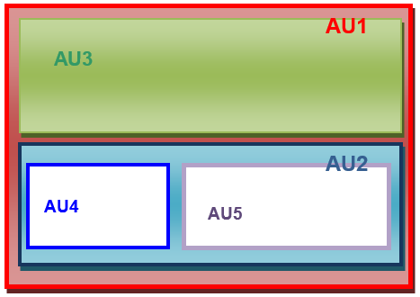
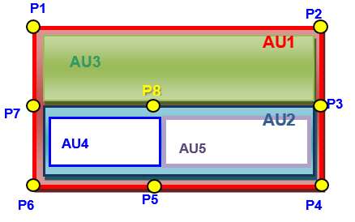
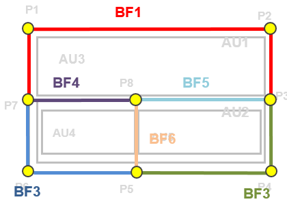
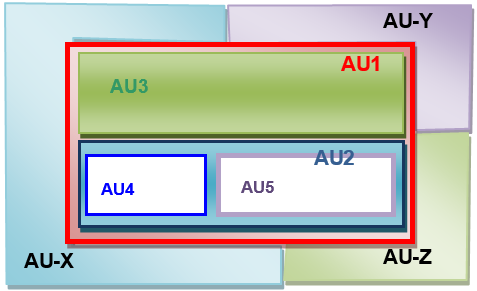
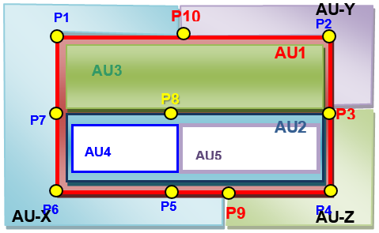
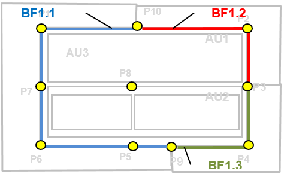
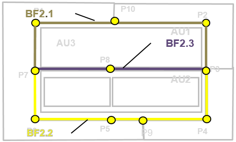
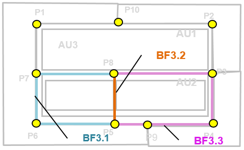
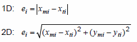
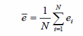

INSPIREInfrastructure for Spatial Information in Europe
INSPIREInfrastructure for Spatial Information in Europe
D2.8.I.4 Data Specification on Administrative Units – Technical Guidelines
Title |
D2.8.I.4 Data Specification on Administrative Units – Technical Guidelines |
Creator |
Temporary MIWP 2021-2024 sub-group 2.3.1 |
Date of publication |
2024-01-31 |
Subject |
INSPIRE Data Specification for the spatial data theme Administrative Units |
Publisher |
INSPIRE Maintenance and Implementation Group (MIG) |
Type |
Text |
Description |
This document describes the INSPIRE Data Specification for the spatial data theme Administrative Units |
Format |
AsciiDoc |
Licence |
|
Rights |
Public |
Identifier |
|
Changelog |
https://github.com/INSPIRE-MIF/technical-guidelines/releases/tag/v2024.1 |
Language |
en |
Relation |
Directive 2007/2/EC of the European Parliament and of the Council of 14 March 2007 establishing an Infrastructure for Spatial Information in the European Community (INSPIRE) |
Foreword
How to read the document?
This document describes the "INSPIRE data specification on Administrative Units – Technical Guidelines" version 3.1(.0) as developed by the Thematic Working Group (TWG) Administrative Units using both natural and a conceptual schema language.
The data specification is based on a common template[1] used for all data specifications, which has been harmonised using the experience from the development of the Annex I, II and III data specifications.
This document provides guidelines for the implementation of the provisions laid down in the draft Implementing Rule for spatial data sets and services of the INSPIRE Directive. It also includes additional requirements and recommendations that, although not included in the Implementing Rule, are relevant to guarantee or to increase data interoperability.
Two executive summaries provide a quick overview of the INSPIRE data specification process in general, and the content of the data specification on Administrative Units in particular. We highly recommend that managers, decision makers, and all those new to the INSPIRE process and/or information modelling should read these executive summaries first.
The UML diagrams (in Chapter 5) offer a rapid way to see the main elements of the specifications and their relationships. The definition of the spatial object types, attributes, and relationships are included in the Feature Catalogue (also in Chapter 5). People having thematic expertise but not familiar with UML can fully understand the content of the data model focusing on the Feature Catalogue. Users might also find the Feature Catalogue especially useful to check if it contains the data necessary for the applications that they run. The technical details are expected to be of prime interest to those organisations that are responsible for implementing INSPIRE within the field of Administrative Units, but also to other stakeholders and users of the spatial data infrastructure.
The technical provisions and the underlying concepts are often illustrated by examples. Smaller examples are within the text of the specification, while longer explanatory examples and descriptions of selected use cases are attached in the annexes.
In order to distinguish the INSPIRE spatial data themes from the spatial object types, the INSPIRE spatial data themes are written in italics.
The document will be publicly available as a 'non-paper'. It does not represent an official position of the European Commission, and as such cannot be invoked in the context of legal procedures. |
Legal Notice
Neither the European Commission nor any person acting on behalf of the Commission is responsible for the use which might be made of this publication.
Interoperability of Spatial Data Sets and Services – General Executive Summary
The challenges regarding the lack of availability, quality, organisation, accessibility, and sharing of spatial information are common to a large number of policies and activities and are experienced across the various levels of public authority in Europe. In order to solve these problems it is necessary to take measures of coordination between the users and providers of spatial information. The Directive 2007/2/EC of the European Parliament and of the Council adopted on 14 March 2007 aims at establishing an Infrastructure for Spatial Information in the European Community (INSPIRE) for environmental policies, or policies and activities that have an impact on the environment.
INSPIRE is based on the infrastructures for spatial information that are created and maintained by the Member States. To support the establishment of a European infrastructure, Implementing Rules addressing the following components of the infrastructure have been specified: metadata, interoperability of spatial data sets (as described in Annexes I, II, III of the Directive) and spatial data services, network services, data and service sharing, and monitoring and reporting procedures.
INSPIRE does not require collection of new data. However, after the period specified in the Directive[2] Member States have to make their data available according to the Implementing Rules.
Interoperability in INSPIRE means the possibility to combine spatial data and services from different sources across the European Community in a consistent way without involving specific efforts of humans or machines. It is important to note that "interoperability" is understood as providing access to spatial data sets through network services, typically via Internet. Interoperability may be achieved by either changing (harmonising) and storing existing data sets or transforming them via services for publication in the INSPIRE infrastructure. It is expected that users will spend less time and efforts on understanding and integrating data when they build their applications based on data delivered in accordance with INSPIRE.
In order to benefit from the endeavours of international standardisation bodies and organisations established under international law their standards and technical means have been utilised and referenced, whenever possible.
To facilitate the implementation of INSPIRE, it is important that all stakeholders have the opportunity to participate in specification and development. For this reason, the Commission has put in place a consensus building process involving data users, and providers together with representatives of industry, research and government. These stakeholders, organised through Spatial Data Interest Communities (SDIC) and Legally Mandated Organisations (LMO)[3], have provided reference materials, participated in the user requirement and technical[4] surveys, proposed experts for the Data Specification Drafting Team[5], the Thematic Working Groups[6] and other ad-hoc cross-thematic technical groups and participated in the public stakeholder consultations on draft versions of the data specifications. These consultations covered expert reviews as well as feasibility and fitness-for-purpose testing of the data specifications[7].
This open and participatory approach was successfully used during the development of the data specifications on Annex I, II and III data themes as well as during the preparation of the Implementing Rule on Interoperability of Spatial Data Sets and Services[8] for Annex I spatial data themes and of its amendment regarding the themes of Annex II and III.
The development framework elaborated by the Data Specification Drafting Team aims at keeping the data specifications of the different themes coherent. It summarises the methodology to be used for the development of the data specifications, providing a coherent set of requirements and recommendations to achieve interoperability. The pillars of the framework are the following technical documents[9]:
-
The Definition of Annex Themes and Scope describes in greater detail the spatial data themes defined in the Directive, and thus provides a sound starting point for the thematic aspects of the data specification development.
-
The Generic Conceptual Model defines the elements necessary for interoperability and data harmonisation including cross-theme issues. It specifies requirements and recommendations with regard to data specification elements of common use, like the spatial and temporal schema, unique identifier management, object referencing, some common code lists, etc. Those requirements of the Generic Conceptual Model that are directly implementable are included in the Implementing Rule on Interoperability of Spatial Data Sets and Services.
-
The Methodology for the Development of Data Specifications defines a repeatable methodology. It describes how to arrive from user requirements to a data specification through a number of steps including use-case development, initial specification development and analysis of analogies and gaps for further specification refinement.
-
The Guidelines for the Encoding of Spatial Data defines how geographic information can be encoded to enable transfer processes between the systems of the data providers in the Member States. Even though it does not specify a mandatory encoding rule it sets GML (ISO 19136) as the default encoding for INSPIRE.
-
The Guidelines for the use of Observations & Measurements and Sensor Web Enablement-related standards in INSPIRE Annex II and III data specification development provides guidelines on how the "Observations and Measurements" standard (ISO 19156) is to be used within INSPIRE.
-
The Common data models are a set of documents that specify data models that are referenced by a number of different data specifications. These documents include generic data models for networks, coverages and activity complexes.
The structure of the data specifications is based on the "ISO 19131 Geographic information - Data product specifications" standard. They include the technical documentation of the application schema, the spatial object types with their properties, and other specifics of the spatial data themes using natural language as well as a formal conceptual schema language[10].
A consolidated model repository, feature concept dictionary, and glossary are being maintained to support the consistent specification development and potential further reuse of specification elements. The consolidated model consists of the harmonised models of the relevant standards from the ISO 19100 series, the INSPIRE Generic Conceptual Model, and the application schemas[11] developed for each spatial data theme. The multilingual INSPIRE Feature Concept Dictionary contains the definition and description of the INSPIRE themes together with the definition of the spatial object types present in the specification. The INSPIRE Glossary defines all the terms (beyond the spatial object types) necessary for understanding the INSPIRE documentation including the terminology of other components (metadata, network services, data sharing, and monitoring).
By listing a number of requirements and making the necessary recommendations, the data specifications enable full system interoperability across the Member States, within the scope of the application areas targeted by the Directive. The data specifications (in their version 3.0) are published as technical guidelines and provide the basis for the content of the Implementing Rule on Interoperability of Spatial Data Sets and Services[12]. The content of the Implementing Rule is extracted from the data specifications, considering short- and medium-term feasibility as well as cost-benefit considerations. The requirements included in the Implementing Rule are legally binding for the Member States according to the timeline specified in the INSPIRE Directive.
In addition to providing a basis for the interoperability of spatial data in INSPIRE, the data specification development framework and the thematic data specifications can be reused in other environments at local, regional, national and global level contributing to improvements in the coherence and interoperability of data in spatial data infrastructures.
Administrative Units – Executive Summary
Administrative units are included in Annex I, which means that they are considered as reference data, i.e. data that constitute the spatial frame for linking to and/or pointing at other information that belong to specific thematic fields such as the environment and socio-economic statistics, alongside many others.
INSPIRE data specification on administrative units has been prepared following the participative principle of a consensus building process. The stakeholders, based on their registration as a Spatial Data Interest Community (SDIC) or a Legally Mandated Organisation (LMO) had the opportunity to bring forward user requirements and reference materials, propose experts for the specification’s development, and to participate in reviewing and testing the data specifications. The Thematic Working Group responsible for the specification development was composed of experts from Belgium, Germany, Norway, Poland and Sweden.
The specification process took place according to the methodology elaborated for INSPIRE respecting the requirements and the recommendation of the INSPIRE Generic Conceptual Model, which is one of the elements that ensures a coherent approach and cross-theme consistency with other themes in the Directive.
During the specification development, the Thematic Working Group has considered widely the achievements of the EuroBoundaryMap product, which already achieved considerable results in harmonising administrative unit data held by the National Mapping and Cadastral Agencies of Europe.
According to the definition of the Directive, administrative units are "units of administration dividing areas where Member States have and/or exercise jurisdictional rights for local, regional and national governance, separated by administrative boundaries". Based on the reference materials and the user requirements, the Thematic Working Group has added some other fundamental aspects like the hierarchical structure of administrative units and the relations with statistical units that have already been defined and in use within the EU-administration[13].
Administrative units in INSPIRE play the role of generic information locators. Their main uses include
-
Searching / filtering other spatial data based on a name or code.
-
Linking / publishing thematic information in a rapid and comparable way.
-
Finding competent authorities e.g. in case of disasters, for environmental protection , etc.
In addition administrative units may provide the frame for a boundary-based analysis of consistency of spatial objects (similar classification, geometrical matching) as required in Art. 8(4) and 10(2) of the Directive.
The administrative units data theme model is divided in two application schemas:
-
The core element of the AdministrativeUnits application schema is the administrative unit represented by a surface geometry. In accordance with the Directive, each administrative unit carries a unique identifier. Administrative units are further described by their geographical name, the country of location, the national administrative code, and the hierarchical level within the administrative structure of the country. This information is completed, if available, with the life cycle information (when the administrative unit has been inserted or changed in the dataset, and when it has been (if ever) superseded or retired in the spatial data set), the name of the corresponding national level and the residence of the administrative authority.
The administrative division of the Members States follows a hierarchical structure where the lowest level units (often communes) are united in higher level units (like provinces, counties, etc) that compose other units at a higher level. It must be ensured that an administrative unit of an upper level is composed of one or more administrative units of a lower level. Lowest level administrative units are further characterised by their geometry and, where available, by the corresponding local administrative unit code. A special spatial object type called condominium has been introduced for describing independent administrative areas that are administered by two or more countries.
Administrative units are separated by administrative boundaries that are specified as lines. As mandatory properties they carry a unique identifier, information on the country, the administrative hierarchic level and their own geometry. These are complemented, when available, with the legal and technical status of the boundary and the life cycle information.
-
The MaritimeUnits application schema models the existing maritime zones. These are stripes or belts of sea defined according international treaties and conventions, where the coastal States execute their jurisdictional rights. Depending on the zone type property, they may concern an area of seabed, ocean floor, subsoil, resources, or even the air space over the sea, for cadastral, administrative, economic, security or safety purposes. These rights are established by the United Nations Convention on the Law of the Sea (UNCLOS). The baseline, the line from which the outer limits of the territorial sea is measured, serves as reference to calculate the breath of territorial sea, while determines the outer limits of other maritime zones by establishing respectively different distances measured from it.
In contrast to the AdministrativeUnits model, no hierarchical structure is established between different maritime zones. However, they share common properties with administrative units, like the unique identifier and the country the maritime zone belongs to. All this information is again complemented, if available, with the life cycle information and the geographical name.
Following a common modelling approach with administrative units, maritime zones are separated by maritime boundaries that are specified as lines. As mandatory properties they carry a unique identifier, information on the country, and their own geometry. These are complemented, when available, with the legal and technical status of the boundary and the life cycle information.
In the INSPIRE administrative unit data specification, there are no mandatory quality requirements. However it is recommended that Member States provide the data at the source accuracy where possible targeting a minimal positional accuracy of 50 meters. The actual values of data quality sub-elements (completeness - commission and omission; logical consistency - conceptual, domain and topological consistency; positional accuracy – absolute ore external accuracy) should be published as metadata, when they are available. Metadata information have to be complemented with the necessary elements to comply with the Metadata Regulation 1205/2008/EC, the ones identified as needed for the interoperability of the Administrative Units theme and, if possible, those recommended in this specification.
Interoperability is further supported by a common reference system and provisions for visualisation. For the latter, simple rules for default portrayal are given in specifying the fill colour of the administrative units and maritime zones, and the line-width of their borders corresponding to administrative and maritime boundaries, as well as the font and size of the labels. Moreover, the default portrayal elements reflect the hierarchy of the represented spatial objects.
The main value of the INSPIRE Administrative Units theme data models is that they have a simple, yet flexible structure that allows data providers to publish their existing data in the most convenient way. Additionally, this specification has given a firm starting point for the related spatial data themes in Annex III of INSPIRE.
As INSPIRE Administrative units data specification is the result of a detailed analysis of user requirements and strong consideration of existing initiatives that went beyond the strictly environmental scope, it is expected that it will also be a solid element of a multi-purpose European spatial data infrastructure.
Acknowledgements
Many individuals and organisations have contributed to the development of these Guidelines.
The Thematic Working Group Administrative Units (TWG-AU) included:
Jesper Paasch (TWG Facilitator), Geir Myrind (TWG Editor), Ulrich Düren, Alina Kmiecik, Frederic Mortier, Ingrid Naumann, Katalin Tóth (European Commission contact point).
The initial MaritimeUnits application schema has been developed by the Annex III TWG Oceanographic geographical features & Sea Regions (TWG-OF-SR), which included:
Keiran Millard (TWG Facilitator), Dominic Lowe (TWG Editor), Hans Mose Jensen, Marc Roesbeke, Carlo Brandini, Nuria Hermida, Maria Olvido Tello, Alessandro Sarretta (European Commission contact point till May 2012), Tomáš Řezník (European Commission contact point from May till August 2012), Michael Lutz & Vlado Cetl (European Commission contact points from August 2012).
The combined data specification including both application schemas has been created by Alina Kmiecik.
Other contributors to the INSPIRE data specifications are the Drafting Team Data Specifications, the JRC Data Specifications Team and the INSPIRE stakeholders - Spatial Data Interested Communities (SDICs) and Legally Mandated Organisations (LMOs).
Contact information
Maria Vanda Nunes de Lima
European Commission Joint Research Centre
Institute for Environment and Sustainability
Unit H06: Digital Earth and Reference Data
TP262, Via Fermi 2749
I-21027 Ispra (VA)
ITALY
E-mail: vanda.lima@jrc.ec.europa.eu
Tel.: 39-0332-7865052
Fax: 39-0332-7866325
http://ies.jrc.ec.europa.eu/
http://ec.europa.eu/dgs/jrc/
http://inspire.jrc.ec.europa.eu/
Table of Contents
- 1. Scope
- 2. Overview
- 3. Specification scopes
- 4. Identification information
- 5. Data content and structure
- 6. Reference systems, units of measure and grids
- 7. Data quality
- 8. Dataset-level metadata
- 9. Delivery
- 10. Data Capture
- 11. Portrayal
- 11.1. Layers to be provided by INSPIRE view services
- 11.2. Styles required to be supported by INSPIRE view services
- 11.2.1. Styles for the layer AU.AdministrativeUnit
- 11.2.2. Styles for the layer AU.AdministrativeBoundary
- 11.2.3. Styles for the layer AU.Condominium
- 11.2.4. Styles for the layer AU.Baseline
- 11.2.5. Styles for the layer AU.MaritimeBoundary
- 11.2.6. Styles for the layer AU.ContiguousZone
- 11.2.7. Styles for the layer AU.ContinentalShelf
- 11.2.8. Styles for the layer AU.ExclusiveEconomicZone
- 11.2.9. Styles for the layer AU.InternalWaters
- 11.2.10. Styles for the layer AU.TerritorialSea
- 11.3. Styles recommended to be supported by INSPIRE view services
- Bibliography
- Annex A: Abstract Test Suite - (normative)
- A.1. Application Schema Conformance Class
- A.2. Reference Systems Conformance Class
- A.3. Data Consistency Conformance Class
- A.3.1. Unique identifier persistency test
- A.3.2. Version consistency test
- A.3.3. Life cycle time sequence test
- A.3.4. Update frequency test
- A.3.5. Administrative unit higher hierarchy test
- A.3.6. Administrative unit lower hierarchy test
- A.3.7. Co-administered Administrative unit test
- A.3.8. Administrative unit area test
- A.3.9. Administrative boundary test
- A.3.10. Condominium spatial extent test
- A.3.11. Condominium administration test
- A.4. Metadata IR Conformance Class
- A.5. Information Accessibility Conformance Class
- A.6. Data Delivery Conformance Class
- A.7. Portrayal Conformance Class
- A.8. Technical Guideline Conformance Class
- Annex B: Use cases - (informative)
- Annex C: Code list values - (normative)
- Annex D: National Administrative Hierarchies (examples) - (informative)
- Annex E: Limitations in the use of Administrative Units data - (informative)
1. Scope
This document specifies a harmonised data specification for the spatial data theme Administrative Units as defined in Annex I of the INSPIRE Directive.
This data specification provides the basis for the drafting of Implementing Rules according to Article 7 (1) of the INSPIRE Directive [Directive 2007/2/EC]. The entire data specification is published as implementation guidelines accompanying these Implementing Rules.
2. Overview
2.1. Name
INSPIRE data specification for the theme Administrative Units.
2.2. Informal description
Definition:
Units of administration, dividing areas where Member States have and/or exercise jurisdictional rights, for local, regional and national governance, separated by administrative boundaries [Directive 2007/2/EC].
Description:
Each national territory is divided into administrative units at different administrative levels as defined by the national administrative hierarchy. Administrative units are separated by administrative boundaries. Under United Nations Convention on the Law of the Sea the coastal States can define maritime zones, wherein they exercise jurisdictional rights on sea area. The zones are separated by maritime boundaries.
The administrative / maritime division forms an indirect spatial reference system. The reference to an administrative unit or maritime zone provides a spatial dimension to data without using coordinates (INSPIRE IMS, 2003).
Administrative units may correspond to the items identified in frame of other territory division systems. The examples of such relationships include, among others, the cadastral parcels, census districts, postal regions, sea regions, statistical units, or sector-specific regions. These items are not considered to constitute a part of the definition of administrative units; they are within the scope of other INSPIRE themes.
Administrative and maritime boundaries are the key to horizontal interoperability between the products of national data custodians. Neighbours should agree on international boundaries with shared geometry at the best possible resolution (INSPIRE RDM, 2002).
The reference date of the administrative units has to be considered for purpose of linkage to statistical information as for instance population figures. Therefore, the aspect of temporal reference and update has to be considered carefully for administrative units.
Provision of national datasets on administrative units, harmonised according to this data specification and to defined reference dates, is required to facilitate interoperable data exchange of all official administrative units according to the administrative levels as defined within each Member State.
The EU-wide harmonized data of all these administrative units can be seen as a key dataset for any kind of (cross-border) spatial handling, important in operations and management.
This data specification has been derived from the specification of EuroGeographics EBM product which is already used for the Administrative Unit Theme of European Commission’s GISCO reference database. The European Environment Agency (EEA) is using this dataset to relate their environmental information and indicators to the official defined administrative units in Europe.
Use cases
This INSPIRE data specification on Administrative units theme is to support the following high level use cases:
-
Filtering data. A user selects regions (e.g. by clicking or entering a name or code). The geometry of the selected administrative units and maritime zones is used in a query filter when retrieving geographic information (using a download service) or metadata (using a discovery service). This could e.g. be used in verification to identify features located at the border between two administrative units or maritime zones.
-
Linking thematic information. To provide users with easy and rapid access to comparable thematic information, data providers link their information to the administrative units and maritime zones.
-
Disaster management. The administrative units and maritime zones that are affected by an environmental phenomenon or disaster are selected.
-
Boundary based analysis. Verification of data of thematic features located at the boundaries of administrative units or maritime zones. This covers the aspect of edge-matching.
-
Discovery of unit related data. Search catalogues to discover available data sets with respect to administrative unit / maritime zone geometry or name (or code).
2.3. Normative References
[Directive 2007/2/EC] Directive 2007/2/EC of the European Parliament and of the Council of 14 March 2007 establishing an Infrastructure for Spatial Information in the European Community (INSPIRE)
[ISO 19107] EN ISO 19107:2005, Geographic Information – Spatial Schema
[ISO 19108] EN ISO 19108:2005, Geographic Information – Temporal Schema
[ISO 19108-c] ISO 19108:2002/Cor 1:2006, Geographic Information – Temporal Schema, Technical Corrigendum 1
[ISO 19111] EN ISO 19111:2007 Geographic information - Spatial referencing by coordinates (ISO 19111:2007)
[ISO 19113] EN ISO 19113:2005, Geographic Information – Quality principles
[ISO 19115] EN ISO 19115:2005, Geographic information – Metadata (ISO 19115:2003)
[ISO 19118] EN ISO 19118:2006, Geographic information – Encoding (ISO 19118:2005)
[ISO 19123] EN ISO 19123:2007, Geographic Information – Schema for coverage geometry and functions
[ISO 19125-1] EN ISO 19125-1:2004, Geographic Information – Simple feature access – Part 1: Common architecture
[ISO 19135] EN ISO 19135:2007 Geographic information – Procedures for item registration (ISO 19135:2005)
[ISO 19138] ISO/TS 19138:2006, Geographic Information – Data quality measures
[ISO 19139] ISO/TS 19139:2007, Geographic information – Metadata – XML schema implementation
[ISO 19157] ISO/DIS 19157, Geographic information – Data quality
[ISO 3166-1] EN ISO 3166-1:2006, Codes for the representation of names of countries and their subdivisions – Part 1: Country codes
[OGC 06-103r4] Implementation Specification for Geographic Information - Simple feature access – Part 1: Common Architecture v1.2.1
NOTE This is an updated version of "EN ISO 19125-1:2004, Geographic information – Simple feature access – Part 1: Common architecture".
[Regulation 1205/2008/EC] Regulation 1205/2008/EC implementing Directive 2007/2/EC of the European Parliament and of the Council as regards metadata
[UNCLOS] United Nations Convention on the Law of the Sea
2.4. Terms and definitions
General terms and definitions helpful for understanding the INSPIRE data specification documents are defined in the INSPIRE Glossary[14].
2.5. Symbols and abbreviations
BKG |
Federal Agency for Cartography and Geodesy (Germany) |
EuroGeographics |
Association representing nearly all European National Mapping and Cadastral Agencies (NMCAs) |
Eurostat |
Statistical Office of the European Communities |
GISCO |
Geographic Information System of the European Commission |
EBM |
EuroBoundaryMap (product of EuroGeographics) |
EEA |
European Environment Agency |
FADN |
Farm Accountancy Data Network (See Council Regulation 79/65/EEC) |
LAU |
Local administrative units |
NUTS |
Nomenclature of Territorial Units for Statistics |
OCL |
Object Constraint Language |
UML |
Unified Modelling Language |
UNCLOS |
United Nation Convention on the Law of the Sea |
2.6. How the Technical Guidelines map to the Implementing Rules
The schematic diagram in Figure 1 gives an overview of the relationships between the INSPIRE legal acts (the INSPIRE Directive and Implementing Rules) and the INSPIRE Technical Guidelines. The INSPIRE Directive and Implementing Rules include legally binding requirements that describe, usually on an abstract level, what Member States must implement.
In contrast, the Technical Guidelines define how Member States might implement the requirements included in the INSPIRE Implementing Rules. As such, they may include non-binding technical requirements that must be satisfied if a Member State data provider chooses to conform to the Technical Guidelines. Implementing these Technical Guidelines will maximise the interoperability of INSPIRE spatial data sets.

Figure 1 - Relationship between INSPIRE Implementing Rules and Technical Guidelines
2.6.1. Requirements
The purpose of these Technical Guidelines (Data specifications on Administrative Units) is to provide practical guidance for implementation that is guided by, and satisfies, the (legally binding) requirements included for the spatial data theme Administrative Units in the Regulation (Implementing Rules) on interoperability of spatial data sets and services. These requirements are highlighted in this document as follows:
|
📕
|
IR Requirement This style is used for requirements contained in the Implementing Rules on interoperability of spatial data sets and services (Commission Regulation (EU) No 1089/2010). |
For each of these IR requirements, these Technical Guidelines contain additional explanations and examples.
NOTE The Abstract Test Suite (ATS) in Annex A contains conformance tests that directly check conformance with these IR requirements.
Furthermore, these Technical Guidelines may propose a specific technical implementation for satisfying an IR requirement. In such cases, these Technical Guidelines may contain additional technical requirements that need to be met in order to be conformant with the corresponding IR requirement when using this proposed implementation. These technical requirements are highlighted as follows:
|
📒
|
TG Requirement X This style is used for requirements for a specific technical solution proposed in these Technical Guidelines for an IR requirement. |
NOTE 1 Conformance of a data set with the TG requirement(s) included in the ATS implies conformance with the corresponding IR requirement(s).
NOTE 2 In addition to the requirements included in the Implementing Rules on interoperability of spatial data sets and services, the INSPIRE Directive includes further legally binding obligations that put additional requirements on data providers. For example, Art. 10(2) requires that Member States shall, where appropriate, decide by mutual consent on the depiction and position of geographical features whose location spans the frontier between two or more Member States. General guidance for how to meet these obligations is provided in the INSPIRE framework documents.
2.6.2. Recommendations
In addition to IR and TG requirements, these Technical Guidelines may also include a number of recommendations for facilitating implementation or for further and coherent development of an interoperable infrastructure.
|
📘
|
Recommendation X Recommendations are shown using this style. |
NOTE The implementation of recommendations is not mandatory. Compliance with these Technical Guidelines or the legal obligation does not depend on the fulfilment of the recommendations.
2.6.3. Conformance
Annex A includes the abstract test suite for checking conformance with the requirements included in these Technical Guidelines and the corresponding parts of the Implementing Rules (Commission Regulation (EU) No 1089/2010).
3. Specification scopes
This data specification does not distinguish different specification scopes, but just considers one general scope.
NOTE For more information on specification scopes, see [ISO 19131:2007], clause 8 and Annex D.
4. Identification information
These Technical Guidelines are identified by the following URI:
NOTE ISO 19131 suggests further identification information to be included in this section, e.g. the title, abstract or spatial representation type. The proposed items are already described in the document metadata, executive summary, overview description (section 2) and descriptions of the application schemas (section 5). In order to avoid redundancy, they are not repeated here.
5. Data content and structure
5.1. Application schemas – Overview
5.1.1. Application schemas included in the IRs
Articles 3, 4 and 5 of the Implementing Rules lay down the requirements for the content and structure of the data sets related to the INSPIRE Annex themes.
|
📕
|
IR Requirement
|
The types to be used for the exchange and classification of spatial objects from data sets related to the spatial data theme Administrative Units are defined in the following application schemas :
-
AdministrativeUnits application schema (see section 5.4).
-
MaritimeUnits application schema (see section 0).
The application schemas specify requirements on the properties of each spatial object including its multiplicity, domain of valid values, constraints, etc.
NOTE The application schemas presented in this section contain some additional information that is not included in the Implementing Rules, in particular multiplicities of attributes and association roles.
|
📒
|
TG Requirement 1 Spatial object types and data types shall comply with the multiplicities defined for the attributes and association roles in this section. |
An application schema may include references (e.g. in attributes or inheritance relationships) to common types or types defined in other spatial data themes. These types can be found in a sub-section called "Imported Types" at the end of each application schema section. The common types referred to from application schemas included in the IRs are addressed in Article 3.
|
📕
|
IR Requirement Types that are common to several of the themes listed in Annexes I, II and III to Directive 2007/2/EC shall conform to the definitions and constraints and include the attributes and association roles set out in Annex I. |
NOTE Since the IRs contain the types for all INSPIRE spatial data themes in one document, Article 3 does not explicitly refer to types defined in other spatial data themes, but only to types defined in external data models.
Common types are described in detail in the Generic Conceptual Model [DS-D2.7], in the relevant international standards (e.g. of the ISO 19100 series) or in the documents on the common INSPIRE models [DS-D2.10.x]. For detailed descriptions of types defined in other spatial data themes, see the corresponding Data Specification TG document [DS-D2.8.x].
5.2. Basic notions
This section explains some of the basic notions used in the INSPIRE application schemas. These explanations are based on the GCM [DS-D2.5].
5.2.1. Notation
5.2.1.1. Unified Modeling Language (UML)
The application schemas included in this section are specified in UML, version 2.1. The spatial object types, their properties and associated types are shown in UML class diagrams.
NOTE For an overview of the UML notation, see Annex D in [ISO 19103].
The use of a common conceptual schema language (i.e. UML) allows for an automated processing of application schemas and the encoding, querying and updating of data based on the application schema – across different themes and different levels of detail.
The following important rules related to class inheritance and abstract classes are included in the IRs.
|
📕
|
IR Requirement (…)
|
The use of UML conforms to ISO 19109 8.3 and ISO/TS 19103 with the exception that UML 2.1 instead of ISO/IEC 19501 is being used. The use of UML also conforms to ISO 19136 E.2.1.1.1-E.2.1.1.4.
NOTE ISO/TS 19103 and ISO 19109 specify a profile of UML to be used in conjunction with the ISO 19100 series. This includes in particular a list of stereotypes and basic types to be used in application schemas. ISO 19136 specifies a more restricted UML profile that allows for a direct encoding in XML Schema for data transfer purposes.
To model constraints on the spatial object types and their properties, in particular to express data/data set consistency rules, OCL (Object Constraint Language) is used as described in ISO/TS 19103, whenever possible. In addition, all constraints are described in the feature catalogue in English, too.
NOTE Since "void" is not a concept supported by OCL, OCL constraints cannot include expressions to test whether a value is a void value. Such constraints may only be expressed in natural language.
5.2.1.2. Stereotypes
In the application schemas in this section several stereotypes are used that have been defined as part of a UML profile for use in INSPIRE [DS-D2.5]. These are explained in Table 1 below.
Table 1 – Stereotypes (adapted from [DS-D2.5])
Stereotype |
Model element |
Description |
applicationSchema |
Package |
An INSPIRE application schema according to ISO 19109 and the Generic Conceptual Model. |
leaf |
Package |
A package that is not an application schema and contains no packages. |
featureType |
Class |
A spatial object type. |
type |
Class |
A type that is not directly instantiable, but is used as an abstract collection of operation, attribute and relation signatures. This stereotype should usually not be used in INSPIRE application schemas as these are on a different conceptual level than classifiers with this stereotype. |
dataType |
Class |
A structured data type without identity. |
union |
Class |
A structured data type without identity where exactly one of the properties of the type is present in any instance. |
codelist |
Class |
A code list. |
import |
Dependency |
The model elements of the supplier package are imported. |
voidable |
Attribute, association role |
A voidable attribute or association role (see section 5.2.2). |
lifeCycleInfo |
Attribute, association role |
If in an application schema a property is considered to be part of the life-cycle information of a spatial object type, the property shall receive this stereotype. |
version |
Association role |
If in an application schema an association role ends at a spatial object type, this stereotype denotes that the value of the property is meant to be a specific version of the spatial object, not the spatial object in general. |
5.2.2. Voidable characteristics
The «voidable» stereotype is used to characterise those properties of a spatial object that may not be present in some spatial data sets, even though they may be present or applicable in the real world. This does not mean that it is optional to provide a value for those properties.
For all properties defined for a spatial object, a value has to be provided – either the corresponding value (if available in the data set maintained by the data provider) or the value of void. A void value shall imply that no corresponding value is contained in the source spatial data set maintained by the data provider or no corresponding value can be derived from existing values at reasonable costs.
|
📘
|
Recommendation 1 The reason for a void value should be provided where possible using a listed value from the VoidReasonValue code list to indicate the reason for the missing value. |
The VoidReasonValue type is a code list, which includes the following pre-defined values:
-
Unpopulated: The property is not part of the dataset maintained by the data provider. However, the characteristic may exist in the real world. For example when the "elevation of the water body above the sea level" has not been included in a dataset containing lake spatial objects, then the reason for a void value of this property would be 'Unpopulated'. The property receives this value for all spatial objects in the spatial data set.
-
Unknown: The correct value for the specific spatial object is not known to, and not computable by the data provider. However, a correct value may exist. For example when the "elevation of the water body above the sea level" of a certain lake has not been measured, then the reason for a void value of this property would be 'Unknown'. This value is applied only to those spatial objects where the property in question is not known.
-
Withheld: The characteristic may exist, but is confidential and not divulged by the data provider.
NOTE It is possible that additional reasons will be identified in the future, in particular to support reasons / special values in coverage ranges.
The «voidable» stereotype does not give any information on whether or not a characteristic exists in the real world. This is expressed using the multiplicity:
-
If a characteristic may or may not exist in the real world, its minimum cardinality shall be defined as 0. For example, if an Address may or may not have a house number, the multiplicity of the corresponding property shall be 0..1.
-
If at least one value for a certain characteristic exists in the real world, the minimum cardinality shall be defined as 1. For example, if an Administrative Unit always has at least one name, the multiplicity of the corresponding property shall be 1..*.
In both cases, the «voidable» stereotype can be applied. In cases where the minimum multiplicity is 0, the absence of a value indicates that it is known that no value exists, whereas a value of void indicates that it is not known whether a value exists or not.
EXAMPLE If an address does not have a house number, the corresponding Address object should not have any value for the «voidable» attribute house number. If the house number is simply not known or not populated in the data set, the Address object should receive a value of void (with the corresponding void reason) for the house number attribute.
5.2.3. Code lists
Code lists are modelled as classes in the application schemas. Their values, however, are managed outside of the application schema.
5.2.3.1. Code list types
The IRs distinguish the following types of code lists.
|
📕
|
IR Requirement
|
The type of code list is represented in the UML model through the tagged value extensibility, which can take the following values:
-
none, representing code lists whose allowed values comprise only the values specified in the IRs (type a);
-
narrower, representing code lists whose allowed values comprise the values specified in the IRs and narrower values defined by data providers (type b);
-
open, representing code lists whose allowed values comprise the values specified in the IRs and additional values at any level defined by data providers (type c); and
-
any, representing code lists, for which the IRs do not specify any allowed values, i.e. whose allowed values comprise any values defined by data providers (type d).
|
📘
|
Recommendation 2 Additional values defined by data providers should not replace or redefine any value already specified in the IRs. |
NOTE This data specification may specify recommended values for some of the code lists of type (b), (c) and (d) (see section 5.2.4.3). These recommended values are specified in a dedicated Annex.
In addition, code lists can be hierarchical, as explained in Article 6(5) of the IRs.
|
📕
|
IR Requirement (…)
|
The type of code list and whether it is hierarchical or not is also indicated in the feature catalogues.
5.2.3.2. Obligations on data providers
|
📕
|
IR Requirement (….)
|
Article 6(6) obliges data providers to use only values that are allowed according to the specification of the code list. The "allowed values according to the specification of the code list" are the values explicitly defined in the IRs plus (in the case of code lists of type (b), (c) and (d)) additional values defined by data providers.
For attributes whose type is a code list of type (b), (c) or (d) data providers may use additional values that are not defined in the IRs. Article 6(6) requires that such additional values and their definition be made available in a register. This enables users of the data to look up the meaning of the additional values used in a data set, and also facilitates the re-use of additional values by other data providers (potentially across Member States).
NOTE Guidelines for setting up registers for additional values and how to register additional values in these registers is still an open discussion point between Member States and the Commission.
5.2.3.3. Recommended code list values
For code lists of type (b), (c) and (d), this data specification may propose additional values as a recommendation (in a dedicated Annex). These values will be included in the INSPIRE code list register. This will facilitate and encourage the usage of the recommended values by data providers since the obligation to make additional values defined by data providers available in a register (see section 5.2.4.2) is already met.
|
📘
|
Recommendation 3 Where these Technical Guidelines recommend values for a code list in addition to those specified in the IRs, these values should be used. |
NOTE For some code lists of type (d), no values may be specified in these Technical Guidelines. In these cases, any additional value defined by data providers may be used.
5.2.3.4. Governance
The following two types of code lists are distinguished in INSPIRE:
-
Code lists that are governed by INSPIRE (INSPIRE-governed code lists). These code lists will be managed centrally in the INSPIRE code list register. Change requests to these code lists (e.g. to add, deprecate or supersede values) are processed and decided upon using the INSPIRE code list register’s maintenance workflows.
INSPIRE-governed code lists will be made available in the INSPIRE code list register at http://inspire.ec.europa.eu/codelist/<CodelistName>. They will be available in SKOS/RDF, XML and HTML. The maintenance will follow the procedures defined in ISO 19135. This means that the only allowed changes to a code list are the addition, deprecation or supersession of values, i.e. no value will ever be deleted, but only receive different statuses (valid, deprecated, superseded). Identifiers for values of INSPIRE-governed code lists are constructed using the pattern http://inspire.ec.europa.eu/codelist/<CodelistName>/<value>.
-
Code lists that are governed by an organisation outside of INSPIRE (externally governed code lists). These code lists are managed by an organisation outside of INSPIRE, e.g. the World Meteorological Organization (WMO) or the World Health Organization (WHO). Change requests to these code lists follow the maintenance workflows defined by the maintaining organisations. Note that in some cases, no such workflows may be formally defined.
Since the updates of externally governed code lists is outside the control of INSPIRE, the IRs and these Technical Guidelines reference a specific version for such code lists.
The tables describing externally governed code lists in this section contain the following columns:
-
The Governance column describes the external organisation that is responsible for maintaining the code list.
-
The Source column specifies a citation for the authoritative source for the values of the code list. For code lists, whose values are mandated in the IRs, this citation should include the version of the code list used in INSPIRE. The version can be specified using a version number or the publication date. For code list values recommended in these Technical Guidelines, the citation may refer to the "latest available version".
-
In some cases, for INSPIRE only a subset of an externally governed code list is relevant. The subset is specified using the Subset column.
-
The Availability column specifies from where (e.g. URL) the values of the externally governed code list are available, and in which formats. Formats can include machine-readable (e.g. SKOS/RDF, XML) or human-readable (e.g. HTML, PDF) ones.
Code list values are encoded using http URIs and labels. Rules for generating these URIs and labels are specified in a separate table.
|
📘
|
Recommendation 4 The http URIs and labels used for encoding code list values should be taken from the INSPIRE code list registry for INSPIRE-governed code lists and generated according to the relevant rules specified for externally governed code lists. |
NOTE Where practicable, the INSPIRE code list register could also provide http URIs and labels for externally governed code lists.
5.2.3.5. Vocabulary
For each code list, a tagged value called "vocabulary" is specified to define a URI identifying the values of the code list. For INSPIRE-governed code lists and externally governed code lists that do not have a persistent identifier, the URI is constructed following the pattern http://inspire.ec.europa.eu/codelist/<UpperCamelCaseName>;.
If the value is missing or empty, this indicates an empty code list. If no sub-classes are defined for this empty code list, this means that any code list may be used that meets the given definition.
An empty code list may also be used as a super-class for a number of specific code lists whose values may be used to specify the attribute value. If the sub-classes specified in the model represent all valid extensions to the empty code list, the subtyping relationship is qualified with the standard UML constraint "\{complete,disjoint}".
5.2.4. Consistency between spatial data sets
Administrative units and maritime zones will very likely be used in conjunction with data coming from other INSPIRE themes (e.g. cadastral parcels, orthoimagery, statistical units, sea regions). Administrative units and maritime zones should be considered as reference data, and geometric consistency with other themes may be achieved if these other themes use administrative units or maritime zones as background data during the production or the validation of their own data.
Currently, there are no consistency rules other than those defined within the application schemas. No consistency rules between administrative units / maritime zones and other spatial data sets have been identified.
5.2.5. Identifier management
|
📕
|
IR Requirement
|
NOTE 1 An external object identifier is a unique object identifier which is published by the responsible body, which may be used by external applications to reference the spatial object. [DS-D2.5]
NOTE 2 Article 9(1) is implemented in each application schema by including the attribute inspireId of type Identifier.
NOTE 3 Article 9(2) is ensured if the namespace and localId attributes of the Identifier remains the same for different versions of a spatial object; the version attribute can of course change.
Each spatial object type in the application schemas of the Administrative Units theme has the mandatory inspireId attribute. Therefore each spatial object needs to provide a unique identifier. This identifier shall be maintained by the national or regional authority. The identifier consists of two parts: the namespace and a local id. The namespace uniquely identifies a national registry wherein the identifier is registered, whereas the local id uniquely identifies an object within this namespace.
Since INSPIRE objectives refer data exchange only, the maintenance and management of unique INSPIRE identifiers is out of INSPIRE scope, and is under the responsibility of the Member States.
5.2.6. Geometry representation
|
📕
|
IR Requirement
|
NOTE 1 The specification restricts the spatial schema to 0-, 1-, 2-, and 2.5-dimensional geometries where all curve interpolations are linear and surface interpolations are performed by triangles.
NOTE 2 The topological relations of two spatial objects based on their specific geometry and topology properties can in principle be investigated by invoking the operations of the types defined in ISO 19107 (or the methods specified in EN ISO 19125-1).
5.2.7. Temporality representation
The application schema(s) use(s) the derived attributes "beginLifespanVersion" and "endLifespanVersion" to record the lifespan of a spatial object.
The attributes "beginLifespanVersion" specifies the date and time at which this version of the spatial object was inserted or changed in the spatial data set. The attribute "endLifespanVersion" specifies the date and time at which this version of the spatial object was superseded or retired in the spatial data set.
NOTE 1 The attributes specify the beginning of the lifespan of the version in the spatial data set itself, which is different from the temporal characteristics of the real-world phenomenon described by the spatial object. This lifespan information, if available, supports mainly two requirements: First, knowledge about the spatial data set content at a specific time; second, knowledge about changes to a data set in a specific time frame. The lifespan information should be as detailed as in the data set (i.e., if the lifespan information in the data set includes seconds, the seconds should be represented in data published in INSPIRE) and include time zone information.
NOTE 2 Changes to the attribute "endLifespanVersion" does not trigger a change in the attribute "beginLifespanVersion".
|
📕
|
IR Requirement (…)
|
NOTE The requirement expressed in the IR Requirement above will be included as constraints in the UML data models of all themes.
|
📘
|
Recommendation 5 If life-cycle information is not maintained as part of the spatial data set, all spatial objects belonging to this data set should provide a void value with a reason of "unpopulated". |
5.3. Administrative Units – Application schemas
5.3.1. Description
5.3.1.1. Narrative description
The Administrative Units data specification establishes two application schemas: AdministrativeUnits and MaritimeUnits. The dependencies between both application schemas and other schemas of the Generic Conceptual Model are illustrated in Figure 2.
The spatial object types in the AdministrativeUnits and MaritimeUnits schemas use the GeographicalName type from the Geographical Names package. The MaritimeZone spatial object type re-uses the LegalStatusValue and TechnicalStatusValue codelists from the AdministrativeUnits package and their corresponding properties.
Both packages refer to the Base Types package to use the Identifer type from the GCM.

Figure 2: Overview of the Administrative Units packages and their dependencies
5.4. Application schema AdministrativeUnits
5.4.1. Description
5.4.1.1. Narrative description
The application schema AdministrativeUnits provides the means for common pan-European representation of administrative division of territory in the Member States. The schema identifies three spatial object types: AdministrativeUnit, AdministrativeBoundary and Condominium.
AdministrativeUnit is the key spatial object type for representing the units of division at all levels of the administrative hierarchy. Each single unit (i.e. instance of AdministrativeUnit spatial object type) belongs to exactly one level of the respective national hierarchy.
Usually, administrative units from a higher level aggregate the units at lower level of administrative hierarchy. As this division of territory is not always strictly hierarchical and can be derived from the geometry, semantic relationships between the units of subsequent upper and lower levels were introduced.
The spatial object type AdministrativeBoundary is defined in this application schema to represent the boundaries between the neighbouring units and their boundary-specific attributes (like technical and legal status).
Usually, a single administrative unit is administered by only one administrative authority. However, in some cases a unit is co-administered by other units (authorities) and is not (directly) linked to an administrative unit at a higher level. The representation of co-administering is supported in this application schema.
In very rare cases a single administrative area is administered by two or more countries. Such an area is named condominium and supported in this application schema by the Condominium spatial object type. The correspondence between the condominium and the countries administering it are represented by a relationship between the AdministrativeUnit and Condominium spatial object types.
NOTE Previous versions of the data specification on Administrative Units contained a candidate type called NUTSRegion to accommodate requirements raised by INSPIRE stakeholders to include an explicit connection to statistical units defined by the EU-administration in the application schema AdministrativeUnits in order to link statistical information to administrative units. This candidate type was considered during the development of the data specification on Statistical Units, where it is included as an informative example of a Statistical Units data set.
In some existing implementations for administrative units data (e.g. EuroBoundaryMap), the spatial extent of administrative units is further decomposed into sub-areas, like land areas, islands, inland water or coastal water areas. The reason for this decomposition of administrative units into areas comes from the natural need for combining administrative information with other thematic information. This application schema does not differentiate between the sub-areas of administrative units because it is out of its scope. Considering the INSPIRE harmonization objectives, the correlation of administrative units with elements of other division systems can be derived from cross-theme analysis of thematic spatial objects. In the case described above, the information on decomposition of administrative units into sub-areas can be derived performing spatial analyses with data from other INSPIRE themes (e.g. Land Use theme from Annex II). See also Annex E for further information.
5.4.1.2. UML Overview
Figure 3 – UML class diagram: Overview of the AdministrativeUnits application schema
The AdministrativeUnit spatial object type uses the GeographicalName type from the Geographical Names package. The AdministrativeUnits package also refers the package Base Types for using the Identifer type defined in the GCM.
AdministrativeUnit is the main spatial object type included in the application schema and represents administrative units at all the levels of administrative hierarchy. Each single unit (i.e. instance of AdministrativeUnit spatial object type) belongs to exactly one hierarchy level. Information about the level in the respective national hierarchy that a certain unit belongs to is documented by the mandatory nationalLevel attribute.
The number of administrative levels differs from country to country (in the EU Member States up to 6 levels are in use, see the examples in Annex D), therefore no absolute levels can be fixed. Instead, the (spatial) correspondence between the levels is a common characteristic of national administrative hierarchies. The representation of these relationships between the units is supported in this application schema by a self-reference of the AdministrativeUnit type, and corresponding to the lowerLevelUnit and upperLevelUnit association roles. The top-down inclusion of units is expressed in the application schema by the lowerLevelUnit association role of the AdministrativeUnit spatial object type. Each unit except for those on the lowest level shall provide the relation to their lower level units. The spatial object type AdministrativeUnit is shown in detail in Figure 4.
Figure 4 Administrative unit
Similarly, the down-top relationship between the units of lower and higher levels can be determined. In fact, usually lower level units refer exactly one higher level unit. A support for describing this is provided by the upperLevelUnit association role of the AdministrativeUnit spatial object type. The only exception to this situation are the units at the highest (country) level; they have no upper level units.
In some countries the hierarchy of Administrative Units differs from the ideal strictly hierarchical organization. For instance, some units (at lowest level) are not linked to any unit at a higher level but to two or more units at same level. In order to support reporting of such situations a self-reference of AdministrativeUnit with the coAdminister and administeredBy association roles is established in this application schema.
|
📕
|
IR Requirement
|
|
📕
|
IR Requirement
|
|
📕
|
IR Requirement
|
The association roles involved in the three requirements above have received the voidable stereotype, which means that they only need to be provided to INSPIRE when this information is available in the source data sets.
For purposes of multilingual support in the identification of administrative units, their names are of data type GeographicalName.
For the same purpose, the names of the levels (attribute nationalLevelName) are of data type localisedCharacterString.
|
📘
|
Recommendation 1 The value of 'language' attribute for AdministrativeUnit.name (GeographicalName DataType) should be provided, except for the situation that the data producer does not have such information. |
For each AdministrativeUnit a location of the authority / administration (residenceOfAuthority) can be reported. It is of data type ResidenceOfAuthority which specifies a geographical name and the position of the authority (e.g. a point geometry).
Since administrative units may consist of mainlands and exclaves, their geometric representation is expressed by the GM_MultiSurface type.
|
📕
|
IR Requirement
|
The second spatial object type in the application schema, AdministrativeBoundary, is the type representing the boundaries between neighbouring administrative units and including their boundary-specific attributes. Figure 5 shows this spatial object type in detail.
Figure 5 Administrative boundary
AdministrativeBoundary provides important information concerning the administrative division. In particular, it is labelled with a legal and a technical status of the boundary. The legal status refers to the political agreement between the units, whereas the technical status faces the edge-matching issues; the "edge-matched" value meaning that the boundary of neighbouring administrative units have the same set of coordinates. If available both indicators shall be provided.
The legal status is not only meant for international boundaries but also for boundaries within member states as there are also cases where the boundaries are not agreed.
This application schema defines a voidable association between AdministrativeUnit and AdministrativeBoundary spatial object types to support the expression of topological and semantic relationships that can be used in queries to avoid geometric intersections.
|
📕
|
IR Requirement
|
|
📘
|
Recommendation 2 The following geometric and topological constraints are recommendations for this data specification:
|
Consistent with existing definitions, a condominium in the context of this specification is considered as a political territory over which two or more sovereign States jointly exercise their jurisdictional rights, without further territorial decomposition. Consequently, a condominium cannot be part of a national administrative hierarchy. On the other hand, condominiums might be included into national datasets and the information about them shall be shared on the European level. Condominium is shown in Figure 6.
Figure 6 Condominiums and relationship to AdministrativeUnit
To support the representation of condominiums a special spatial object type is defined in the application schema AdministrativeUnits. It includes a mandatory surface geometry and an optional name. The association to the AdministrativeUnit type allows representing the connection between the condominium and the administering States.
|
📕
|
IR Requirement
|
|
📕
|
IR Requirement
|
5.4.1.3. Identifier management
Besides the INSPIRE-identifier (inspireId attribute) each AdministrativeUnit spatial object carries an attribute with the national unit code (nationalCode attribute). This code act as a thematic identifier and it may be also unique when preceded by the CountryCode-prefix.
5.4.1.4. Modelling of object references
5.4.1.4.1. Internal references
Each upper level administrative unit is composed of lower level units, and each lower level unit is linked to an upper level unit, with the exceptions highlighted in section 5.4.1.2. Administrative units are limited by boundaries.
5.4.1.4.2. External references
In most of European countries the local administrative units (communes) refer to borders of cadastral parcels. These references are not modelled in this application schema.
5.4.1.5. Geometry representation
In this technical specification two alternative geometric structures of boundary features are provided:
-
The first structure aims to support download of mass information collected in a form of data files.
-
The second structure is better suited for presenting administrative units and maritime zones using view services, as well as selective download of small portion of feature instances using direct access download services, e.g. a Web feature service.
Both structures fully comply with the AdministrativeUnits and MaritimeUnits application schemas. Users may decide to implement the structure that fits the best their individual purposes.
NOTE The following two sections explain the mentioned structures applied to the AdministrativeUnits application schema, but they are equally valid for the MaritimeUnits application schema, except for the hierarchical relationships, which are not defined for this schema.
5.4.1.5.1. Flat model of boundary feature geometry
In this geometric model, AdministrativeBoundary feature is represented as follows:
-
Each AdministrativeBoundary feature corresponds to the curve established between the two significant nodes of topological graph established with respect to the lowest level of national administrative hierarchy.
-
Each single AdministrativeBoundary feature might refer one or more hierarchical levels e.g. AdministrativeBoundary features representing a part of national boundary, part of '2nd level' boundary, and part of '3rd level' boundary.
-
Each AdministrativeUnit feature associates to all touching AdministrativeBoundary features.
-
Each AdministrativeBoundary feature associates to all touching administrative units from all the levels of administrative hierarchy.
The geometric model is explained by the following example.
EXAMPLE
Assume the following situation for the area features (instances of AdministrativeUnit):

|
The polygons represent Administrative units at three levels:
|
Level 2 is topologically equivalent to level1 of administrative hierarchy. Level 3 is not topologically equivalent to levels 1 and 2.
The boundary features (BF = instances of spatial object type AdministrativeBoundary) are built based on the topological structure of the entire (including all administrative levels) boundary geometry. Each BF consist of only one curve which is built between two connected nodes in the topological network. The nationalLevel attribute of the BF contains all relevant levels of the administrative hierarchy
In this example the following vertices are identified:

|
The Points P3, P5, P7, and P8 are nodes in the topological structure, all other points are intermediate points (vertices). |
Then, the curves and Boundary features are built as follows:

|
C1 = (P7, P1, P2, P3) = BF1 with nationalLevel=1, 2 C2 = (P3, P4, P5) = BF2 with nationalLevel=1, 2, 3 C3 = (P5, P6, P7) = BF3 with nationalLevel=1, 2, 3 C4 = (P7, P8) = BF4 with nationalLevel=2, 3 C5 = (P8, P3) = BF5 with nationalLevel=2, 3 C6 = (P8, P5) = BF6 with nationalLevel=3 |
Finally, the following associations between boundaries and administrative units have to be built:
| BOUNDARY ⇒ UNIT | UNIT ⇒ BOUNDARY |
|---|---|
BF1 ⇒ AU1, AU3 BF2 ⇒ AU1, AU2, AU5 BF3 ⇒ AU1, AU2, AU4 BF4 ⇒ AU2, AU3, AU4 BF5 ⇒ AU2, AU3, AU5 BF6 ⇒ AU4, AU5 |
AU1 ⇒ BF1, BF2, BF3 AU2 ⇒ BF2, BF3, BF4, BF5 AU3 ⇒ BF1, BF4, BF5 AU4 ⇒ BF3, BF4, BF6 AU5 ⇒ BF2, BF5, BF6 |
5.4.1.5.2. Multi-layer model of boundary features geometry
In this geometric model, AdministrativeBoundary feature is represented as follows:
-
Each single AdministrativeBoundary feature represents exactly one administrative boundary established at certain level of national administrative hierarchy e.g. the boundary between Poland and Germany, the boundary between Liguria and Piemonte regions.
-
The AdministrativeBoundary features (that is, boundaries between administrative units) are identified at each hierarchical level e.g.: AdministrativeBoundary features representing the national boundaries, the AdministrativeBoundary features representing '2nd level' boundaries, the AdministrativeBoundary features representing '3rd level' boundaries etc;
-
The geometry of AdministrativeBoundary feature corresponds to the entire line of demarcation determined for the administrative unit at the same level as the boundary level.
-
Each AdministrativeUnit feature associates only to boundaries established at the level corresponding to the level of this administrative unit.
-
Each AdministrativeBoundary feature associates only to admisnitrative units that are separated by this boundary and have the same administrative level as the level of this boundary.
The geometric model is explained by the following example.
EXAMPLE
This example considers exactly the same situation, as discussed in the case of flat geometric model.

|
The polygons represent Administrative Units at three levels:
|
Level 2 is topologically equivalent to level1 of administrative hierarchy. Level 3 is not topologically equivalent to levels 1 and 2.
Additionally , the polygons representing the countries adjacent to AU1 have been introduced to evidence the fact that begin and end nodes of country level boundaries do not necessarily meet the begin/end node of some regional boundary. These are labeled AU-X, AU-Y, and AU-Z.
The AdministrativeBoundary features are determined independentyly at each level, and are based on the topological structure established separatelly for each level national administrative hierarchy. Each AdministrativeBoundary is geometrically represented by single Curve ©, that is defined for a selected subset of nodes representing the line of demercation between the two units.
The nationalLevel of the AdministrativeBoundary feature (BF) corresponds to the level at which this boundary was established.
In this example the following vertices are identified:

|
|
Begin and end nodes of international boundaries do not necessarily meet begin/end node of some regional boundary. |
Based on the identified nodes the following boundaries at three levels of administrative structure can be determined:

|
The AdministrativeBoundary features are built as follows: national boundaries (hierarchyLevel=1): BF1.1 = C1(P9,P5,P6,P7,P1,P10) BF1.2 = C2(P10,P2,P3) BF1.3 = C3(P3,P4,P9) |

|
The AdministrativeBoundary features are built as follows: regional boundaries (hierarchyLevel=2): BF2.1 = C2.1(P7,P1,P10,P2,P3) BF2.2 = C2.2(P3,P4,P9,P5,P6,P7) BF2.3 = C2.3(P7,P8,P3) |

|
The AdministrativeBoundary features are built as follows: local boundaries (hierarchyLevel=3): BF3.1 = C3.1=(P5,P6,P7,P8) BF3.2 = C3.2(P8,P5) BF3.3 = C3.3(P8,P3,P4,P9,P5) |
Finally, the following associations between boundaries and administrative units have to be built:
| BOUNDARY ⇒ UNIT | UNIT ⇒ BOUNDARY |
|---|---|
national boundaries: BF1.1 ⇒ AU1 (boundary with AU-X) BF1.2 ⇒ AU1 (boundary with AU-Y) BF1.3 ⇒ AU1 (boundary with AU-Z) regional boundaries: BF2.3 ⇒ AU2, AU3 BF2.2 ⇒ AU2 BF2.1 ⇒ AU3 local boundaries: BF3.1 ⇒ AU4 BF3.2 ⇒ AU4, AU5 BF3.3 ⇒ AU5 |
national units: AU1 ⇒ BF1.1, BF1.2, BF1.3 regional units: AU2 ⇒ BF2.1, BF2.2 AU3 ⇒ BF2.1, BF2.3 local units: AU4 ⇒ BF3.1, BF3.2 AU5 ⇒ BF3.2, BF3.3 |
5.4.2. Feature catalogue
Feature catalogue metadata
Application Schema |
INSPIRE Application Schema AdministrativeUnits |
Version number |
3.0 |
Types defined in the feature catalogue
| Type | Package | Stereotypes |
|---|---|---|
AdministrativeBoundary |
AdministrativeUnits |
«featureType» |
AdministrativeHierarchyLevel |
AdministrativeUnits |
«codelist» |
AdministrativeUnit |
AdministrativeUnits |
«featureType» |
Condominium |
AdministrativeUnits |
«featureType» |
ResidenceOfAuthority |
AdministrativeUnits |
«dataType» |
5.4.2.1. Spatial object types
5.4.2.1.1. AdministrativeBoundary
| AdministrativeBoundary | ||||||||||||
|---|---|---|---|---|---|---|---|---|---|---|---|---|
|
||||||||||||
Attribute: beginLifespanVersion
|
||||||||||||
Attribute: country
|
||||||||||||
Attribute: endLifespanVersion
|
||||||||||||
Attribute: geometry
|
||||||||||||
Attribute: inspireId
|
||||||||||||
Attribute: legalStatus
|
||||||||||||
Attribute: nationalLevel
|
||||||||||||
Attribute: technicalStatus
|
||||||||||||
Association role: admUnit
|
5.4.2.1.2. AdministrativeUnit
| AdministrativeUnit | ||||||||||||
|---|---|---|---|---|---|---|---|---|---|---|---|---|
|
||||||||||||
Attribute: beginLifespanVersion
|
||||||||||||
Attribute: country
|
||||||||||||
Attribute: endLifespanVersion
|
||||||||||||
Attribute: geometry
|
||||||||||||
Attribute: inspireId
|
||||||||||||
Attribute: name
|
||||||||||||
Attribute: nationalCode
|
||||||||||||
Attribute: nationalLevel
|
||||||||||||
Attribute: nationalLevelName
|
||||||||||||
Attribute: residenceOfAuthority
|
||||||||||||
Association role: condominium
|
||||||||||||
Association role: lowerLevelUnit
|
||||||||||||
Association role: administeredBy
|
||||||||||||
Association role: upperLevelUnit
|
||||||||||||
Association role: coAdminister
|
||||||||||||
Association role: boundary
|
||||||||||||
Constraint: AdmininstrativeUnitHighestLevel
|
||||||||||||
Constraint: AdministrativeUnitLowestLevel
|
||||||||||||
Constraint: CondominiumsAtCountryLevel
|
5.4.2.1.3. Condominium
| Condominium | ||||||||||
|---|---|---|---|---|---|---|---|---|---|---|
|
||||||||||
Attribute: beginLifespanVersion
|
||||||||||
Attribute: endLifespanVersion
|
||||||||||
Attribute: geometry
|
||||||||||
Attribute: inspireId
|
||||||||||
Attribute: name
|
||||||||||
Association role: admUnit
|
5.4.2.2. Data types
5.4.2.2.1. ResidenceOfAuthority
| ResidenceOfAuthority | ||||||||
|---|---|---|---|---|---|---|---|---|
|
||||||||
Attribute: name
|
||||||||
Attribute: geometry
|
5.4.2.3. Code lists
5.4.2.3.1. AdministrativeHierarchyLevel
| AdministrativeHierarchyLevel | ||||||||||
|---|---|---|---|---|---|---|---|---|---|---|
|
5.4.2.3.2. LegalStatusValue
| LegalStatusValue | ||||||||||
|---|---|---|---|---|---|---|---|---|---|---|
|
5.4.2.3.3. TechnicalStatusValue
| TechnicalStatusValue | ||||||||||
|---|---|---|---|---|---|---|---|---|---|---|
|
5.4.2.4. Imported types (informative)
This section lists definitions for feature types, data types and code lists that are defined in other application schemas. The section is purely informative and should help the reader understand the feature catalogue presented in the previous sections. For the normative documentation of these types, see the given references.
5.4.2.4.1. CharacterString
| CharacterString | ||||
|---|---|---|---|---|
|
5.4.2.4.2. CountryCode
| CountryCode | ||||
|---|---|---|---|---|
|
5.4.2.4.3. DateTime
| DateTime | ||||
|---|---|---|---|---|
|
5.4.2.4.4. GM_Curve
| GM_Curve | ||||
|---|---|---|---|---|
|
5.4.2.4.5. GM_MultiSurface
| GM_MultiSurface | ||||
|---|---|---|---|---|
|
5.4.2.4.6. GM_Point
| GM_Point | ||||
|---|---|---|---|---|
|
5.4.2.4.7. GeographicalName
| GeographicalName | ||||||
|---|---|---|---|---|---|---|
|
5.4.2.4.8. Identifier
| Identifier | ||||||||
|---|---|---|---|---|---|---|---|---|
|
5.4.2.4.9. LocalisedCharacterString
| LocalisedCharacterString | ||||
|---|---|---|---|---|
|
5.5. Application schema MaritimeUnits
5.5.1. Description
5.5.1.1. Narrative description
The application schema MaritimeUnits provides the means for common pan-European representation of delimitation of maritime jurisdiction between coastal States. The schema identifies spatial object types for describing key sea division concepts: MaritimeBoundary, MaritimeZone (zones of different types distinguished by an attribute) and Baseline.
The MaritimeZone spatial object type represents any zone on the sea defined by international treaties and conventions, where a coastal State executes jurisdictional rights. MaritimeZone is further classified as a certain type of maritime zone by means of the zoneType attribute. The following zone types are distinguished: internal waters, territorial sea, contiguous zone, exclusive economic zone and continental shelf.
Depending on the type of zone, the jurisdictional rights of a coastal State may concern an area of seabed, ocean floor, subsoil, resources, or even the air space over the sea. Once defined, the maritime zones are used, among others, for cadastral, administrative, economic (e.g. fishery, exploring and exploiting), security or safety purposes.
Each maritime zone can belong exactly to one coastal State. At the same time a coastal State might have several maritime zones. The number of types of maritime zones established for a coastal State vary, depending on geographical and political characteristics, but each coastal State always has at least an internal waters and a territorial sea zone.
The maritime zones are directly or indirectly defined in relation to a Baseline. According to the United Nations Convention on the Law of the Sea (UNCLOS), the "baseline" is a line established by a coastal State from which the outer limits of its territorial sea and certain other outer limits are measured. In particular, the territorial sea of a coastal State is a belt of sea of a defined breadth not exceeding 12 nautical miles measured from the baselines, whereas internal waters are the waters on the landward side of the baselines of the territorial sea of the coastal State. In turn, the contiguous zone, the exclusive economic zone and the continental shelf are defined as zones beyond and adjacent to the territorial sea of a coastal State.
There can be more than one baseline determined by a State. For instance, France has two baselines: one in the north between Belgium to Spain, and the second in the south - between Spain and Italy.
Figure 7: The concepts underlying definition of MaritimeUnits application schema
Each zone must be delimited by MaritimeBoundary spatial objects. A MaritimeBoundary is a line that separates any type of maritime jurisdiction (i.e. fishery, petroleum and other resources of the sea as well as other uses of the sea). MaritimeBoundary may be twofold:
-
it may define a seaward outer limit of certain maritime zone of a coastal State,
-
it may represent a limit of the maritime zone of States with opposite or adjacent coasts.
A Maritime boundary is always subject to international treaties between the States and in a legal context it may be either agreed or in dispute. In case the maritime boundary is established between the adjacent coastal States, it shall be a natural prolongation of the administrative boundary on land.
5.5.1.2. UML Overview
The complete MaritimeUnits application schema is shown in Figure 8 and described in detail below.
Figure 8 – UML class diagram: Overview of the MaritimeUnits application schema
MaritimeZone is an spatial object type providing the common characteristics of all maritime zones that can be established by a coastal State on the sea. Each maritime zone is represented geometrically by the GM_MultiSurface data type and it can belong to exactly one coastal State. Information about the State executing jurisdictional rights over a certain zone is documented by the mandatory countryCode attribute.
In some specific cases a maritime zone may be known under a specific unique geographical name. In order to support the depiction of zones using geographical names a voidable attribute name, of GeographicalName data type, is also provided.
The specific type of maritime zone is classified and distinguished by means of the zoneType attribute of the MaritimeZone spatial object type. The values in the related code list (MaritimeZoneTypeValue) express the diversity of maritime zones available: internal waters (designated by the code list value internalWaters), territorial sea (territorialSea), contiguous zone (contiguousZone), exclusive economic zone (exclusiveEconomicZone) or continental shelf (continentalShelf).
Figure 9: MaritimeZone spatial object type.
|
📘
|
Recommendation 6 According to the UNCLOS, each coastal State is allowed to determine its territorial sea and internal waters. For this reason the representation of the territorial sea and the internal waters should always be present in a dataset providing data according to this application schema. |
NOTE The territorialSea and internalWaters values of the MaritimeZoneTypeValue code list specifically represent these concepts.
Other kinds of maritime zones may be additionally provided depending on the geographical and political situation in a sea region. For this reason no absolute number of types of zones per State may be fixed.
By definition there are well known topological relationships between the various types of zones. In particular (see also Figure 7 and Recommendation 7):
-
the internal waters of a coastal State shall be adjacent to the AdministrativeUnit spatial object representing the State (i.e. where the attribute nationalLevel is equal to '1stOrder').
-
the territorial sea of a coastal State and its internal waters shall be adjacent on the Baseline.
-
the contiguous zone, exclusive economic zone and continental shelf shall be adjacent to the territorial sea.
-
the continental shelf shall include the exclusive economic zone.
-
the exclusive economic zone shall include the contiguous zone.
|
📘
|
Recommendation 7 The following geometric and topological constraints are recommendations for this data specification:
|
NOTE The relationships mentioned above are not explicitly expressed in the UML model for simplicity, nevertheless they should be reflected in the data.
The Baseline spatial object type is a key notion to determine maritime zones. It serves as reference to calculate the breadth of territorial sea, as well as the outer limits of contiguous zones, exclusive economic zones and continental shelves. The baseline is composed of baseline segments (see the segment association role), and each baseline segment can be established based on different baseline calculation methods (see the segmentType attribute of the BaselineSegment data type). The rules for establishing baselines are provided in Article 5 of UNCLOS.
Figure 10: Baseline spatial object type.
The instances of the MaritimeBoundary spatial object type represents the borders on sea between the coastal States. They may represent:
-
a seaward outer limit of certain maritime zone of a coastal State.
-
a limit of the maritime zone of States with opposite or adjacent coasts.
If a MaritimeBoundary spatial object represents a boundary between adjacent coastal States, its start point shall be the same as the end point of the administrative boundary on land.
Each instance of the MaritimeZone spatial object type provides the countryCode of a coastal State that executes jurisdictional right on it.
For purposes of multilingual support in the identification of maritime zones, their names are of data type GeographicalName.
The MaritimeBoundary spatial object type supports the representation of the boundaries established on seas between the neighbouring coastal States. Figure 11 shows this spatial object type in detail.
Figure 11: MaritimeBoundary spatial object type
MaritimeBoundary provides important information concerning sea division. In particular, it is labelled with a legal and a technical status of the boundary. The legal status refers to the political agreement between the units, whereas the technical status faces the edge-matching issues; the "edge-matched" value meaning that the boundary of neighbouring maritime zones have the same set of coordinates. In contrast, there are also cases where the maritime boundaries are not agreed. If available both indicators shall be provided
The MaritimeUnits application schema defines a voidable association between the MaritimeZone and the MaritimeBoundary spatial object types to support the expression of topological and semantic relationships that may be used in queries to avoid geometric intersections.
5.5.1.3. Modelling of object references
No specific requirements or recommendations are defined for object references in the MaritimeUnits application schema.
5.5.2. Feature catalogue
Feature catalogue metadata
Application Schema |
INSPIRE Application Schema MaritimeUnits |
Version number |
3.0 |
Types defined in the feature catalogue
| Type | Package | Stereotypes |
|---|---|---|
Baseline |
MaritimeUnits |
«featureType» |
BaselineSegment |
MaritimeUnits |
«dataType» |
BaselineSegmentTypeValue |
MaritimeUnits |
«codelist» |
MaritimeBoundary |
MaritimeUnits |
«featureType» |
MaritimeZone |
MaritimeUnits |
«featureType» |
MaritimeZoneTypeValue |
MaritimeUnits |
«codelist» |
5.5.2.1. Spatial object types
5.5.2.1.1. Baseline
| Baseline | ||||||||||
|---|---|---|---|---|---|---|---|---|---|---|
|
||||||||||
Attribute: beginLifespanVersion
|
||||||||||
Attribute: endLifespanVersion
|
||||||||||
Attribute: inspireId
|
||||||||||
Association role: segment
|
5.5.2.1.2. MaritimeBoundary
| MaritimeBoundary | ||||||||||||
|---|---|---|---|---|---|---|---|---|---|---|---|---|
|
||||||||||||
Attribute: beginLifespanVersion
|
||||||||||||
Attribute: country
|
||||||||||||
Attribute: endLifespanVersion
|
||||||||||||
Attribute: geometry
|
||||||||||||
Attribute: inspireId
|
||||||||||||
Attribute: legalStatus
|
||||||||||||
Attribute: technicalStatus
|
5.5.2.1.3. MaritimeZone
| MaritimeZone | ||||||||||
|---|---|---|---|---|---|---|---|---|---|---|
|
||||||||||
Attribute: beginLifeSpanVersion
|
||||||||||
Attribute: country
|
||||||||||
Attribute: endLifepanVersion
|
||||||||||
Attribute: geometry
|
||||||||||
Attribute: inspireId
|
||||||||||
Attribute: name
|
||||||||||
Attribute: zoneType
|
||||||||||
Association role: boundary
|
||||||||||
Association role: seaArea
|
||||||||||
Association role: baseline
|
||||||||||
Association role: baseline
|
5.5.2.2. Data types
5.5.2.2.1. BaselineSegment
| BaselineSegment | ||||||||||
|---|---|---|---|---|---|---|---|---|---|---|
|
||||||||||
Attribute: geometry
|
||||||||||
Attribute: segmentType
|
5.5.2.3. Code lists
5.5.2.3.1. BaselineSegmentTypeValue
| BaselineSegmentTypeValue | ||||||||||
|---|---|---|---|---|---|---|---|---|---|---|
|
5.5.2.3.2. MaritimeZoneTypeValue
| MaritimeZoneTypeValue | ||||||||||
|---|---|---|---|---|---|---|---|---|---|---|
|
5.5.2.4. Imported types (informative)
This section lists definitions for feature types, data types and code lists that are defined in other application schemas. The section is purely informative and should help the reader understand the feature catalogue presented in the previous sections. For the normative documentation of these types, see the given references.
5.5.2.4.1. CountryCode
| CountryCode | ||||
|---|---|---|---|---|
|
5.5.2.4.2. DateTime
| DateTime | ||||
|---|---|---|---|---|
|
5.5.2.4.3. GM_Curve
| GM_Curve | ||||
|---|---|---|---|---|
|
5.5.2.4.4. GM_MultiSurface
| GM_MultiSurface | ||||
|---|---|---|---|---|
|
5.5.2.4.5. GeographicalName
| GeographicalName | ||||||
|---|---|---|---|---|---|---|
|
5.5.2.4.6. Identifier
| Identifier | ||||||||
|---|---|---|---|---|---|---|---|---|
|
5.5.2.4.7. LegalStatusValue
| LegalStatusValue | ||||||
|---|---|---|---|---|---|---|
|
5.5.2.4.8. SeaArea
| SeaArea | ||||||||
|---|---|---|---|---|---|---|---|---|
|
5.5.2.4.9. Shoreline
| Shoreline | ||||||
|---|---|---|---|---|---|---|
|
5.5.2.4.10. TechnicalStatusValue
| TechnicalStatusValue | ||||||
|---|---|---|---|---|---|---|
|
6. Reference systems, units of measure and grids
6.1. Default reference systems, units of measure and grid
The reference systems, units of measure and geographic grid systems included in this sub-section are the defaults to be used for all INSPIRE data sets, unless theme-specific exceptions and/or additional requirements are defined in section 6.2.
6.1.1. Coordinate reference systems
6.1.1.1. Datum
|
📕
|
IR Requirement For the three-dimensional and two-dimensional coordinate reference systems and the horizontal component of compound coordinate reference systems used for making spatial data sets available, the datum shall be the datum of the European Terrestrial Reference System 1989 (ETRS89) in areas within its geographical scope, or the datum of the International Terrestrial Reference System (ITRS) or other geodetic coordinate reference systems compliant with ITRS in areas that are outside the geographical scope of ETRS89. Compliant with the ITRS means that the system definition is based on the definition of the ITRS and there is a well documented relationship between both systems, according to EN ISO 19111. |
6.1.1.2. Coordinate reference systems
|
📕
|
IR Requirement Spatial data sets shall be made available using at least one of the coordinate reference systems specified in sections 1.3.1, 1.3.2 and 1.3.3, unless one of the conditions specified in section 1.3.4 holds. 1.3.1. Three-dimensional Coordinate Reference Systems
1.3.2. Two-dimensional Coordinate Reference Systems
1.3.3. Compound Coordinate Reference Systems
1.3.4. Other Coordinate Reference Systems Exceptions, where other coordinate reference systems than those listed in 1.3.1, 1.3.2 or 1.3.3 may be used, are:
The geodetic codes and parameters needed to describe these other coordinate reference systems and to allow conversion and transformation operations shall be documented and an identifier shall be created in a coordinate systems register established and operated by the Commission, according to EN ISO 19111 and ISO 19127. |
6.1.1.3. Display
|
📕
|
IR Requirement For the display of spatial data sets with the view network service as specified in Regulation No 976/2009, at least the coordinate reference systems for two-dimensional geodetic coordinates (latitude, longitude) shall be available. |
6.1.1.4. Identifiers for coordinate reference systems
|
📕
|
IR Requirement
|
These Technical Guidelines propose to use the http URIs provided by the Open Geospatial Consortium as coordinate reference system identifiers (see identifiers for the default CRSs in the INSPIRE coordinate reference systems register). These are based on and redirect to the definition in the EPSG Geodetic Parameter Registry (http://www.epsg-registry.org/).
|
📒
|
TG Requirement 2 The identifiers listed in the INSPIRE coordinate reference systems register (https://inspire.ec.europa.eu/crs) shall be used for referring to the coordinate reference systems used in a data set. |
NOTE CRS identifiers may be used e.g. in:
-
data encoding,
-
data set and service metadata, and
-
requests to INSPIRE network services.
6.1.2. Temporal reference system
|
📕
|
IR Requirement
|
NOTE 1 Point 5 of part B of the Annex to Commission Regulation (EC) No 1205/2008 (the INSPIRE Metadata IRs) states that the default reference system shall be the Gregorian calendar, with dates expressed in accordance with ISO 8601.
NOTE 2 ISO 8601 Data elements and interchange formats – Information interchange – Representation of dates and times is an international standard covering the exchange of date and time-related data. The purpose of this standard is to provide an unambiguous and well-defined method of representing dates and times, so as to avoid misinterpretation of numeric representations of dates and times, particularly when data is transferred between countries with different conventions for writing numeric dates and times. The standard organizes the data so the largest temporal term (the year) appears first in the data string and progresses to the smallest term (the second). It also provides for a standardized method of communicating time-based information across time zones by attaching an offset to Coordinated Universal Time (UTC).
EXAMPLE 1997 (the year 1997), 1997-07-16 (16th July 1997), 1997-07-16T19:20:3001:00 (16th July 1997, 19h 20' 30'', time zone: UTC1)
6.1.3. Units of measure
|
📕
|
IR Requirement (…)
|
7. Data quality
This chapter includes a description of the data quality elements and sub-elements as well as the corresponding data quality measures that should be used to evaluate and document data quality for data sets related to the spatial data theme Administrative Units (section 7.1).
It may also define requirements or recommendations about the targeted data quality results applicable for data sets related to the spatial data theme Administrative Units (sections 7.2 and 7.3).
In particular, the data quality elements, sub-elements and measures specified in section 7.1 should be used for
-
evaluating and documenting data quality properties and constraints of spatial objects, where such properties or constraints are defined as part of the application schema(s) (see section 5);
-
evaluating and documenting data quality metadata elements of spatial data sets (see section 8); and/or
-
specifying requirements or recommendations about the targeted data quality results applicable for data sets related to the spatial data theme Administrative Units (see sections 7.2 and 7.3).
The descriptions of the elements and measures are based on Annex D of ISO/DIS 19157 Geographic information – Data quality.
7.1. Data quality elements
Table 3 lists all data quality elements and sub-elements that are being used in this specification. Data quality information can be evaluated at level of spatial object, spatial object type, dataset or dataset series. The level at which the evaluation is performed is given in the "Evaluation Scope" column.
The measures to be used for each of the listed data quality sub-elements are defined in the following sub-sections.
Table 3 – Data quality elements used in the spatial data theme Administrative Units
Section |
Data quality element |
Data quality sub-element |
Definition |
Evaluation Scope |
7.1.1 |
Completeness |
Commission |
Excess data present in the dataset, as described by the scope |
dataset |
7.1.2 |
Completeness |
Omission |
Data absent from the dataset, as described by the scope |
dataset |
7.1.3 |
Logical consistency |
Conceptual consistency |
Adherence to rules of the conceptual schema |
dataset |
7.1.4 |
Logical consistency |
Domain consistency |
Adherence of values to the value domains |
dataset |
7.1.5 |
Logical consistency |
Topological consistency |
Correctness of the explicitly encoded topological characteristics of the dataset, as described by the scope |
dataset |
7.1.6 |
Positional accuracy |
Absolute or external accuracy |
Closeness of reported coordinate values to values accepted as or being true |
dataset |
|
📘
|
Recommendation 8 Where it is impossible to express the evaluation of a data quality element in a quantitative way, the evaluation of the element should be expressed with a textual statement as a data quality descriptive result. |
7.1.1. Completeness – Commission
|
📘
|
Recommendation 9 Commission should be evaluated and documented using Rate of excess items, as specified in the table below. |
Name |
Rate of excess items |
Alternative name |
- |
Data quality element |
Completeness |
Data quality sub-element |
Commission |
Data quality basic measure |
Error rate |
Definition |
Number of excess items in the dataset in relation to the number of items that should have been present. |
Description |
- |
Evaluation scope |
data set |
Reporting scope |
data set |
Parameter |
- |
Data quality value type |
Real, Percentage, Ratio |
Data quality value structure |
Single value |
Source reference |
ISO/DIS 19157 Geographic information – Data quality |
Example |
- |
Measure identifier |
3 |
7.1.2. Completeness – Omission
|
📘
|
Recommendation 10 Omission should be evaluated and documented using Rate of missing items, as specified in the table below. |
Name |
Rate of missing items |
Alternative name |
- |
Data quality element |
Completeness |
Data quality sub-element |
Omission |
Data quality basic measure |
Error rate |
Definition |
Number of missing items in the dataset in relation to the number of items that should have been present. |
Description |
- |
Evaluation scope |
data set |
Reporting scope |
data set |
Parameter |
- |
Data quality value type |
Real, Percentage, Ratio |
Data quality value structure |
Single value |
Source reference |
ISO/DIS 19157 Geographic information – Data quality |
Example |
- |
Measure identifier |
7 |
7.1.3. Logical consistency – Conceptual consistency
The Application Schema conformance class of the Abstract Test Suite in Annex I defines a number of tests to evaluate the conceptual consistency (tests A.1.1-A.1.9) of a data set.
|
📘
|
Recommendation 11 For the tests on conceptual consistency, it is recommended to use the Logical consistency – Conceptual consistency data quality sub-element and the measure Number of items not compliant with the rules of the conceptual schema as specified in the table below. |
Name |
Number of items not compliant with the rules of the conceptual schema |
Alternative name |
- |
Data quality element |
Logical consistency |
Data quality sub-element |
Conceptual consistency |
Data quality basic measure |
Error count |
Definition |
Count of all items in the dataset that are not compliant with the rules of the conceptual schema |
Description |
If the conceptual schema explicitly or implicitly describes rules, these rules shall be followed. Violations against such rules can be, for example, invalid placement of features within a defined tolerance, duplication of features and invalid overlap of features. |
Evaluation scope |
spatial object / spatial object type |
Reporting scope |
data set |
Parameter |
- |
Data quality value type |
Integer |
Data quality value structure |
- |
Source reference |
ISO/DIS 19157 Geographic information – Data quality |
Example |
|
Measure identifier |
10 |
7.1.4. Logical consistency – Domain consistency
The Application Schema conformance class of the Abstract Test Suite in Annex I defines a number of tests to evaluate the domain consistency (tests A1.10-A.1.12) of a data set.
|
📘
|
Recommendation 12 For the tests on domain consistency, it is recommended to use the Logical consistency – Domain consistency data quality sub-element and the measure Number of items not in conformance with their value domain as specified in the table below. |
Name |
Number of items not in conformance with their value domain |
Alternative name |
- |
Data quality element |
Logical consistency |
Data quality sub-element |
Domain consistency |
Data quality basic measure |
Error count |
Definition |
Count of all items in the dataset that are not in conformance with their value domain |
Description |
|
Evaluation scope |
spatial object / spatial object type |
Reporting scope |
data set |
Parameter |
- |
Data quality value type |
Integer |
Data quality value structure |
- |
Source reference |
ISO/DIS 19157 Geographic information – Data quality |
Example |
|
Measure identifier |
16 |
7.1.5. Logical Consistency – Topological consistency
|
📘
|
Recommendation 13 Topological consistency should be evaluated and documented using Number of faulty point-curve connections and Number of missing connections due to undershoots, as specified in the tables below. |
Name |
Number of faulty point-curve connections |
Alternative name |
Extraneous nodes |
Data quality element |
Logical consistency |
Data quality sub-element |
Topological consistency |
Data quality basic measure |
Error count |
Definition |
Number of faulty point-curve connections in the dataset. |
Description |
A point-curve connection exists where different curves touch. These curves have an intrinsic topological relationship that has to reflect the true constellation. If the point-curve connection contradicts the universe of discourse, the point-curve connection is faulty with respect to this data quality measure. The data quality measure counts the number of errors of this kind. |
Evaluation scope |
data set |
Reporting scope |
data set |
Parameter |
- |
Data quality value type |
Integer |
Data quality value structure |
Single value |
Source reference |
ISO/DIS 19157 Geographic information – Data quality |
Example |
- |
Measure identifier |
21 |
Name |
Number of missing connections due to undershoots |
Alternative name |
Undershoots |
Data quality element |
Logical consistency |
Data quality sub-element |
Topological consistency |
Data quality basic measure |
Error count |
Definition |
Count of items in the dataset, within the parameter tolerance, that are mismatched due to undershoots. |
Description |
- |
Evaluation scope |
data set |
Reporting scope |
data set |
Parameter |
Search distance from the end of a dangling line |
Data quality value type |
Integer |
Data quality value structure |
Single value |
Source reference |
ISO/DIS 19157 Geographic information – Data quality |
Example |
- |
Measure identifier |
23 |
7.1.6. Positional accuracy – Absolute or external accuracy
|
📘
|
Recommendation 14 Absolute or external accuracy should be evaluated and documented using Mean value of positional uncertainties, as specified in the tables below. |
Name |
Mean value of positional uncertainties (1D, 2D) |
Alternative name |
- |
Data quality element |
Positional accuracy |
Data quality sub-element |
Absolute or external accuracy |
Data quality basic measure |
Not applicable |
Definition |
Mean value of the positional uncertainties for a set of positions where the positional uncertainties are defined as the distance between a measured position and what is considered as the corresponding true position. |
Description |
For a number of points (N), the measured positions are given as xmi, and ymi coordinates depending on the dimension in which the position of the point is measured. A corresponding set of coordinates, xti and yti are considered to represent the true positions. The errors are calculated as

The mean positional uncertainties of the horizontal absolute or external positions are then calculated as

A criterion for the establishing of correspondence should also be stated (e.g. allowing for correspondence to the closest position, correspondence on vertices or along lines). The criterion/criteria for finding the corresponding points shall be reported with the data quality evaluation result. This data quality measure is different from the standard deviation. |
Evaluation scope |
data set |
Reporting scope |
data set |
Parameter |
- |
Data quality value type |
Measure |
Data quality value structure |
Single value |
Source reference |
ISO/DIS 19157 Geographic information – Data quality |
Example |
- |
Measure identifier |
28 |
7.2. Minimum data quality requirements
No minimum data quality requirements are defined for the spatial data theme Administrative Units.
7.3. Recommendation on data quality
|
📘
|
Recommendation 15 All spatial objects of the Administrative Units theme should be provided at the source accuracy where possible. |
|
📘
|
Recommendation 16 All spatial objects of the Administrative Units theme should have a positional accuracy of 50 meters or better. |
No other minimum data quality recommendations are defined.
8. Dataset-level metadata
This section specifies dataset-level metadata elements, which should be used for documenting metadata for a complete dataset or dataset series.
NOTE Metadata can also be reported for each individual spatial object (spatial object-level metadata). Spatial object-level metadata is fully described in the application schema(s) (section 5).
For some dataset-level metadata elements, in particular those for reporting data quality and maintenance, a more specific scope can be specified. This allows the definition of metadata at sub-dataset level, e.g. separately for each spatial object type (see instructions for the relevant metadata element).
8.1. Metadata elements defined in INSPIRE Metadata Regulation
Table 4 gives an overview of the metadata elements specified in Regulation 1205/2008/EC (implementing Directive 2007/2/EC of the European Parliament and of the Council as regards metadata).
The table contains the following information:
-
The first column provides a reference to the relevant section in the Metadata Regulation, which contains a more detailed description.
-
The second column specifies the name of the metadata element.
-
The third column specifies the multiplicity.
-
The fourth column specifies the condition, under which the given element becomes mandatory.
Table 4 – Metadata for spatial datasets and spatial dataset series specified in Regulation 1205/2008/EC
Metadata Regulation Section |
Metadata element |
Multiplicity |
Condition |
1.1 |
Resource title |
1 |
|
1.2 |
Resource abstract |
1 |
|
1.3 |
Resource type |
1 |
|
1.4 |
Resource locator |
0..* |
Mandatory if a URL is available to obtain more information on the resource, and/or access related services. |
1.5 |
Unique resource identifier |
1..* |
|
1.7 |
Resource language |
0..* |
Mandatory if the resource includes textual information. |
2.1 |
Topic category |
1..* |
|
3 |
Keyword |
1..* |
|
4.1 |
Geographic bounding box |
1..* |
|
5 |
Temporal reference |
1..* |
|
6.1 |
Lineage |
1 |
|
6.2 |
Spatial resolution |
0..* |
Mandatory for data sets and data set series if an equivalent scale or a resolution distance can be specified. |
7 |
Conformity |
1..* |
|
8.1 |
Conditions for access and use |
1..* |
|
8.2 |
Limitations on public access |
1..* |
|
9 |
Responsible organisation |
1..* |
|
10.1 |
Metadata point of contact |
1..* |
|
10.2 |
Metadata date |
1 |
|
10.3 |
Metadata language |
1 |
Generic guidelines for implementing these elements using ISO 19115 and 19119 are available at https://knowledge-base.inspire.ec.europa.eu/publications/technical-guidance-implementation-inspire-dataset-and-service-metadata-based-isots-191392007_en. The following sections describe additional theme-specific recommendations and requirements for implementing these elements.
8.1.1. Conformity
The Conformity metadata element defined in Regulation 1205/2008/EC requires to report the conformance with the Implementing Rule for interoperability of spatial data sets and services. In addition, it may be used also to document the conformance to another specification.
|
📘
|
Recommendation 17 Dataset metadata should include a statement on the overall conformance of the dataset with this data specification (i.e. conformance with all requirements). |
|
📘
|
Recommendation 18 The Conformity metadata element should be used to document conformance with this data specification (as a whole), with a specific conformance class defined in the Abstract Test Suite in Annex A and/or with another specification. |
The Conformity element includes two sub-elements, the Specification (a citation of the Implementing Rule for interoperability of spatial data sets and services or other specification), and the Degree of conformity. The Degree can be Conformant (if the dataset is fully conformant with the cited specification), Not Conformant (if the dataset does not conform to the cited specification) or Not Evaluated (if the conformance has not been evaluated).
|
📘
|
Recommendation 19 If a dataset is not yet conformant with all requirements of this data specification, it is recommended to include information on the conformance with the individual conformance classes specified in the Abstract Test Suite in Annex A. |
|
📘
|
Recommendation 20 If a dataset is produced or transformed according to an external specification that includes specific quality assurance procedures, the conformity with this specification should be documented using the Conformity metadata element. |
|
📘
|
Recommendation 21 If minimum data quality recommendations are defined then the statement on the conformity with these requirements should be included using the Conformity metadata element and referring to the relevant data quality conformance class in the Abstract Test Suite. |
NOTE Currently no minimum data quality requirements are included in the IRs. The recommendation above should be included as a requirement in the IRs if minimum data quality requirements are defined at some point in the future.
|
📘
|
Recommendation 22 When documenting conformance with this data specification or one of the conformance classes defined in the Abstract Test Suite, the Specification sub-element should be given using the http URI identifier of the conformance class or using a citation including the following elements:
|
EXAMPLE 1: The XML snippets below show how to fill the Specification sub-element for documenting conformance with the whole data specification on Addresses v3.0.1.
<gmd:DQ_ConformanceResult>
<gmd:specification href="http://inspire.ec.europa.eu/conformanceClass/ad/3.0.1/tg" />
<gmd:explanation> (...) </gmd:explanation>
<gmd:pass> (...) </gmd:pass>
</gmd:DQ_ConformanceResult>or (using a citation):
<gmd:DQ_ConformanceResult>
<gmd:specification>
<gmd:CI_Citation>
<gmd:title>
<gco:CharacterString>INSPIRE Data Specification on Administrative Units – Draft Guidelines</gco:CharacterString>
</gmd:title>
<gmd:date>
<gmd:date>
<gco:Date>2013-05-17</gco:Date>
</gmd:date>
<gmd:dateType>
<gmd:CI_DateTypeCode codelist="http://standards.iso.org/ittf/PubliclyAvailableStandards/ISO_19139_Schemas/resou
rces/Codelist/ML_gmxCodelists.xml#CI_DateTypeCode" codelistValue="publication">publication</gmd:CI_DateTypeCode>
</gmd:dateType>
</gmd:date>
</gmd:CI_Citation>
</gmd:specification>
<gmd:explanation> (...) </gmd:explanation>
<gmd:pass> (...) </gmd:pass>
</gmd:DQ_ConformanceResult>EXAMPLE 2: The XML snippets below show how to fill the Specification sub-element for documenting conformance with the CRS conformance class of the data specification on Addresses v3.0.1.
<gmd:DQ_ConformanceResult>
<gmd:specification href="http://inspire.ec.europa.eu/conformanceClass/ad/3.0.1/crs" />
<gmd:explanation> (...) </gmd:explanation>
<gmd:pass> (...) </gmd:pass>
</gmd:DQ_ConformanceResult>or (using a citation):
<gmd:DQ_ConformanceResult>
<gmd:specification>
<gmd:CI_Citation>
<gmd:title>
<gco:CharacterString>INSPIRE Data Specification on Administrative Units – Draft Guidelines – CRS</gco:CharacterString>
</gmd:title>
<gmd:date>
<gmd:date>
<gco:Date>2013-05-17</gco:Date>
</gmd:date>
<gmd:dateType>
<gmd:CI_DateTypeCode codelist="http://standards.iso.org/ittf/PubliclyAvailableStandards/ISO_19139_Schemas/resou
rces/Codelist/ML_gmxCodelists.xml#CI_DateTypeCode" codelistValue="publication">publication</gmd:CI_DateTypeCode>
</gmd:dateType>
</gmd:date>
</gmd:CI_Citation>
</gmd:specification>
<gmd:explanation> (...) </gmd:explanation>
<gmd:pass> (...) </gmd:pass>
</gmd:DQ_ConformanceResult>8.1.2. Lineage
|
📘
|
Recommendation 23 Following the ISO/DIS 19157 Quality principles, if a data provider has a procedure for the quality management of their spatial data sets then the appropriate data quality elements and measures defined in ISO/DIS 19157 should be used to evaluate and report (in the metadata) the results. If not, the Lineage metadata element (defined in Regulation 1205/2008/EC) should be used to describe the overall quality of a spatial data set. |
According to Regulation 1205/2008/EC, lineage "is a statement on process history and/or overall quality of the spatial data set. Where appropriate it may include a statement whether the data set has been validated or quality assured, whether it is the official version (if multiple versions exist), and whether it has legal validity. The value domain of this metadata element is free text".
The Metadata Technical Guidelines based on EN ISO 19115 and EN ISO 19119 specifies that the statement sub-element of LI_Lineage (EN ISO 19115) should be used to implement the lineage metadata element.
|
📘
|
Recommendation 24 To describe the transformation steps and related source data, it is recommended to use the following sub-elements of LI_Lineage: |
-
For the description of the transformation process of the local to the common INSPIRE data structures, the LI_ProcessStep sub-element should be used.
-
For the description of the source data the LI_Source sub-element should be used.
NOTE 1 In order to improve the interoperability, domain templates and instructions for using these free text elements (descriptive statements) may be specified here and/or in an Annex of this data specification.
8.1.3. Temporal reference
According to Regulation 1205/2008/EC, at least one of the following temporal reference metadata sub-elements shall be provided: temporal extent, date of publication, date of last revision, date of creation.
|
📘
|
Recommendation 25 It is recommended that at least the date of the last revision of a spatial data set should be reported using the Date of last revision metadata sub-element. |
8.2. Metadata elements for interoperability
|
📕
|
IR Requirement The metadata describing a spatial data set shall include the following metadata elements required for interoperability:
|
These Technical Guidelines propose to implement the required metadata elements based on ISO 19115 and ISO/TS 19139.
The following TG requirements need to be met in order to be conformant with the proposed encoding.
|
📒
|
TG Requirement 3 Metadata instance (XML) documents shall validate without error against the used ISO 19139 XML schema. |
NOTE Section 2.1.2 of the Metadata Technical Guidelines discusses the different ISO 19139 XML schemas that are currently available.
|
📒
|
TG Requirement 4 Metadata instance (XML) documents shall contain the elements and meet the INSPIRE multiplicity specified in the sections below. |
|
📒
|
TG Requirement 5 The elements specified below shall be available in the specified ISO/TS 19139 path. |
|
📘
|
Recommendation 26 The metadata elements for interoperability should be made available together with the metadata elements defined in the Metadata Regulation through an INSPIRE discovery service. |
NOTE While this not explicitly required by any of the INSPIRE Implementing Rules, making all metadata of a data set available together and through one service simplifies implementation and usability.
8.2.1. Coordinate Reference System
| Metadata element name | Coordinate Reference System |
|---|---|
Definition |
Description of the coordinate reference system used in the dataset. |
ISO 19115 number and name |
13. referenceSystemInfo |
ISO/TS 19139 path |
referenceSystemInfo |
INSPIRE obligation / condition |
mandatory |
INSPIRE multiplicity |
1..* |
Data type(and ISO 19115 no.) |
186. MD_ReferenceSystem |
Domain |
To identify the reference system, the referenceSystemIdentifier (RS_Identifier) shall be provided. NOTE More specific instructions, in particular on pre-defined values for filling the referenceSystemIdentifier attribute should be agreed among Member States during the implementation phase to support interoperability. |
Implementing instructions |
|
Example |
referenceSystemIdentifier: code: ETRS_89 codeSpace: INSPIRE RS registry |
Example XML encoding |
|
Comments |
8.2.2. Temporal Reference System
| Metadata element name | Temporal Reference System |
|---|---|
Definition |
Description of the temporal reference systems used in the dataset. |
ISO 19115 number and name |
13. referenceSystemInfo |
ISO/TS 19139 path |
referenceSystemInfo |
INSPIRE obligation / condition |
Mandatory, if the spatial data set or one of its feature types contains temporal information that does not refer to the Gregorian Calendar or the Coordinated Universal Time. |
INSPIRE multiplicity |
0..* |
Data type(and ISO 19115 no.) |
186. MD_ReferenceSystem |
Domain |
No specific type is defined in ISO 19115 for temporal reference systems. Thus, the generic MD_ReferenceSystem element and its reference SystemIdentifier (RS_Identifier) property shall be provided. NOTE More specific instructions, in particular on pre-defined values for filling the referenceSystemIdentifier attribute should be agreed among Member States during the implementation phase to support interoperability. |
Implementing instructions |
|
Example |
referenceSystemIdentifier: code: GregorianCalendar codeSpace: INSPIRE RS registry |
Example XML encoding |
|
Comments |
8.2.3. Encoding
| Metadata element name | Encoding |
|---|---|
Definition |
Description of the computer language construct that specifies the representation of data objects in a record, file, message, storage device or transmission channel |
ISO 19115 number and name |
271. distributionFormat |
ISO/TS 19139 path |
distributionInfo/MD_Distribution/distributionFormat |
INSPIRE obligation / condition |
mandatory |
INSPIRE multiplicity |
1..* |
Data type (and ISO 19115 no.) |
284. MD_Format |
Domain |
See B.2.10.4. The property values (name, version, specification) specified in section 5 shall be used to document the default and alternative encodings. |
Implementing instructions |
|
Example |
name: <Application schema name> GML application schema version: 4.0 specification: D2.8.I.4 Data Specification on Administrative Units – Technical Guidelines |
Example XML encoding |
|
Comments |
8.2.4. Character Encoding
| Metadata element name | Character Encoding |
|---|---|
Definition |
The character encoding used in the data set. |
ISO 19115 number and name |
|
ISO/TS 19139 path |
|
INSPIRE obligation / condition |
Mandatory, if an encoding is used that is not based on UTF-8. |
INSPIRE multiplicity |
0..* |
Data type (and ISO 19115 no.) |
|
Domain |
|
Implementing instructions |
|
Example |
- |
Example XML encoding |
|
Comments |
8.2.5. Spatial representation type
| Metadata element name | Spatial representation type |
|---|---|
Definition |
The method used to spatially represent geographic information. |
ISO 19115 number and name |
37. spatialRepresentationType |
ISO/TS 19139 path |
|
INSPIRE obligation / condition |
Mandatory |
INSPIRE multiplicity |
1..* |
Data type (and ISO 19115 no.) |
B.5.26 MD_SpatialRepresentationTypeCode |
Domain |
|
Implementing instructions |
Of the values included in the code list in ISO 19115 (vector, grid, textTable, tin, stereoModel, video), only vector, grid and tin should be used. NOTE Additional code list values may be defined based on feedback from implementation. |
Example |
- |
Example XML encoding |
|
Comments |
8.2.6. Data Quality – Logical Consistency – Topological Consistency
See section 8.3.2 for instructions on how to implement metadata elements for reporting data quality.
8.3. Recommended theme-specific metadata elements
|
📘
|
Recommendation 27 The metadata describing a spatial data set or a spatial data set series related to the theme Administrative Units should comprise the theme-specific metadata elements specified in Table 5. |
The table contains the following information:
-
The first column provides a reference to a more detailed description.
-
The second column specifies the name of the metadata element.
-
The third column specifies the multiplicity.
Table 5 – Optional theme-specific metadata elements for the theme Administrative Units
Section |
Metadata element |
Multiplicity |
8.3.1 |
Maintenance Information |
0..1 |
8.3.2 |
Logical Consistency – Conceptual Consistency |
0..* |
8.3.2 |
Logical Consistency – Domain Consistency |
0..* |
8.3.2 |
Logical consistency – Topological Consistency |
0..* |
8.3.2 |
Completeness – Commission |
0..* |
8.3.2 |
Completeness – Omission |
0..* |
8.3.2 |
Positional accuracy – Absolute or external accuracy |
0..* |
|
📘
|
Recommendation 28 For implementing the metadata elements included in this section using ISO 19115, ISO/DIS 19157 and ISO/TS 19139, the instructions included in the relevant sub-sections should be followed. |
8.3.1. Maintenance Information
| Metadata element name | Maintenance information |
|---|---|
Definition |
Information about the scope and frequency of updating |
ISO 19115 number and name |
30. resourceMaintenance |
ISO/TS 19139 path |
identificationInfo/MD_Identification/resourceMaintenance |
INSPIRE obligation / condition |
optional |
INSPIRE multiplicity |
0..1 |
Data type(and ISO 19115 no.) |
142. MD_MaintenanceInformation |
Domain |
This is a complex type (lines 143-148 from ISO 19115). At least the following elements should be used (the multiplicity according to ISO 19115 is shown in parentheses):
|
Implementing instructions |
|
Example |
|
Example XML encoding |
|
Comments |
8.3.2. Metadata elements for reporting data quality
|
📘
|
Recommendation 29 For reporting the results of the data quality evaluation, the data quality elements, sub-elements and (for quantitative evaluation) measures defined in chapter 7 should be used. |
|
📘
|
Recommendation 30 The metadata elements specified in the following sections should be used to report the results of the data quality evaluation. At least the information included in the row "Implementation instructions" should be provided. |
The first section applies to reporting quantitative results (using the element DQ_QuantitativeResult), while the second section applies to reporting non-quantitative results (using the element DQ_DescriptiveResult).
|
📘
|
Recommendation 31 If a dataset does not pass the tests of the Application schema conformance class (defined in Annex A), the results of each test should be reported using one of the options described in sections 8.3.2.1 and 8.3.2.2. |
NOTE 1 If using non-quantitative description, the results of several tests do not have to be reported separately, but may be combined into one descriptive statement.
NOTE 2 The sections 8.3.2.1 and 8.3.2.2 may need to be updated once the XML schemas for ISO 19157 have been finalised.
The scope for reporting may be different from the scope for evaluating data quality (see section 7). If data quality is reported at the data set or spatial object type level, the results are usually derived or aggregated.
|
📘
|
Recommendation 32 The scope element (of type DQ_Scope) of the DQ_DataQuality subtype should be used to encode the reporting scope. Only the following values should be used for the level element of DQ_Scope: Series, Dataset, featureType. If the level is featureType the levelDescription/MDScopeDescription/features element (of type Set< GF_FeatureType>) shall be used to list the feature type names. |
NOTE In the level element of DQ_Scope, the value featureType is used to denote spatial object type.
8.3.2.1. Guidelines for reporting quantitative results of the data quality evaluation
| Metadata element name | See chapter 7 |
|---|---|
Definition |
See chapter 7 |
ISO/DIS 19157 number and name |
3. report |
ISO/TS 19139 path |
dataQualityInfo/*/report |
INSPIRE obligation / condition |
optional |
INSPIRE multiplicity |
0..* |
Data type (and ISO/DIS 19157 no.) |
Corresponding DQ_xxx subelement from ISO/DIS 19157, e.g. 12. DQ_CompletenessCommission |
Domain |
Lines 7-9 from ISO/DIS 19157
|
Implementing instructions |
NOTE This should be the name as defined in Chapter 7.
NOTE If the reported data quality results are derived or aggregated (i.e. the scope levels for evaluation and reporting are different), the derivation or aggregation should also be specified using this property.
NOTE This should be data or range of dates on which the data quality measure was applied. DQ_QuantitativeResult / 64. value
NOTE The DQ_Result type should be DQ_QuantitativeResult and the value(s) represent(s) the application of the data quality measure (39.) using the specified evaluation method (42-43.) |
Example |
See Table E.12 — Reporting commission as metadata (ISO/DIS 19157) |
Example XML encoding |
8.3.2.2. Guidelines for reporting descriptive results of the Data Quality evaluation
| Metadata element name | See chapter 7 |
|---|---|
Definition |
See chapter 7 |
ISO/DIS 19157 number and name |
3. report |
ISO/TS 19139 path |
dataQualityInfo/*/report |
INSPIRE obligation / condition |
optional |
INSPIRE multiplicity |
0..* |
Data type (and ISO/DIS 19157 no.) |
Corresponding DQ_xxx subelement from ISO/DIS 19157, e.g. 12. DQ_CompletenessCommission |
Domain |
Line 9 from ISO/DIS 19157
|
Implementing instructions |
NOTE The DQ_Result type should be DQ_DescriptiveResult and in the statement (68.) the evaluation of the selected DQ sub-element should be expressed in a narrative way. |
Example |
See Table E.15 — Reporting descriptive result as metadata (ISO/DIS 19157) |
Example XML encoding |
9. Delivery
9.1. Updates
|
📕
|
IR Requirement
|
NOTE In this data specification, no exception is specified, so all updates shall be made available at the latest 6 months after the change was applied in the source data set.
9.2. Delivery medium
According to Article 11(1) of the INSPIRE Directive, Member States shall establish and operate a network of services for INSPIRE spatial data sets and services. The relevant network service types for making spatial data available are:
-
view services making it possible, as a minimum, to display, navigate, zoom in/out, pan, or overlay viewable spatial data sets and to display legend information and any relevant content of metadata;
-
download services, enabling copies of spatial data sets, or parts of such sets, to be downloaded and, where practicable, accessed directly;
-
transformation services, enabling spatial data sets to be transformed with a view to achieving interoperability.
NOTE For the relevant requirements and recommendations for network services, see the relevant Implementing Rules and Technical Guidelines[16].
EXAMPLE 1 Through the Get Spatial Objects function, a download service can either download a pre-defined data set or pre-defined part of a data set (non-direct access download service), or give direct access to the spatial objects contained in the data set, and download selections of spatial objects based upon a query (direct access download service). To execute such a request, some of the following information might be required:
the list of spatial object types and/or predefined data sets that are offered by the download service (to be provided through the Get Download Service Metadata operation),
and the query capabilities section advertising the types of predicates that may be used to form a query expression (to be provided through the Get Download Service Metadata operation, where applicable),
a description of spatial object types offered by a download service instance (to be provided through the Describe Spatial Object Types operation).
EXAMPLE 2 Through the Transform function, a transformation service carries out data content transformations from native data forms to the INSPIRE-compliant form and vice versa. If this operation is directly called by an application to transform source data (e.g. obtained through a download service) that is not yet conformant with this data specification, the following parameters are required:
Input data (mandatory). The data set to be transformed.
Source model (mandatory, if cannot be determined from the input data). The model in which the input data is provided.
Target model (mandatory). The model in which the results are expected.
Model mapping (mandatory, unless a default exists). Detailed description of how the transformation is to be carried out.
9.3. Encodings
The IRs contain the following two requirements for the encoding to be used to make data available.
|
📕
|
IR Requirement 1. Every encoding rule used to encode spatial data shall conform to EN ISO 19118. In particular, it shall specify schema conversion rules for all spatial object types and all attributes and association roles and the output data structure used. 2. Every encoding rule used to encode spatial data shall be made available. 2a. Every encoding rule used to encode spatial data shall also specify whether and how to represent attributes and association roles for which a corresponding value exists but is not contained in the spatial data sets maintained by a Member State, or cannot be derived from existing values at reasonable costs. |
NOTE ISO 19118:2011 specifies the requirements for defining encoding rules used for interchange of geographic data within the set of International Standards known as the "ISO 19100 series". An encoding rule allows geographic information defined by application schemas and standardized schemas to be coded into a system-independent data structure suitable for transport and storage. The encoding rule specifies the types of data being coded and the syntax, structure and coding schemes used in the resulting data structure. Specifically, ISO 19118:2011 includes
-
requirements for creating encoding rules based on UML schemas,
-
requirements for creating encoding services, and
-
requirements for XML-based encoding rules for neutral interchange of data.
While the IRs do not oblige the usage of a specific encoding, these Technical Guidelines propose to make data related to the spatial data theme Administrative Units available at least in the default encoding(s) specified in section 0. In this section, a number of TG requirements are listed that need to be met in order to be conformant with the default encoding(s).
The proposed default encoding(s) meet the requirements in Article 7 of the IRs, i.e. they are conformant with ISO 19118 and (since they are included in this specification) publicly available.
9.3.1. Default Encoding(s)
9.3.1.1. Specific requirements for GML encoding
This data specification proposes the use of GML as the default encoding, as recommended in sections 7.2 and 7.3 of [DS-D2.7]. GML is an XML encoding in compliance with ISO 19118, as required in Article 7(1). For details, see [ISO 19136], and in particular Annex E (UML-to-GML application schema encoding rules).
The following TG requirements need to be met in order to be conformant with GML encodings.
|
📒
|
TG Requirement 6 Data instance (XML) documents shall validate without error against the provided XML schema. |
NOTE 1 Not all constraints defined in the application schemas can be mapped to XML. Therefore, the following requirement is necessary.
NOTE 2 The obligation to use only the allowed code list values specified for attributes and most of the constraints defined in the application schemas cannot be mapped to the XML sch. They can therefore not be enforced through schema validation. It may be possible to express some of these constraints using other schema or rule languages (e.g. Schematron), in order to enable automatic validation.
|
📒
|
TG Requirement 7 Data related to the theme Administrative Units shall be made available in at least the encodings specified in this section for the relevant application schemas. |
9.3.1.2. Default encoding for application schema AdministrativeUnits
Name: AdministrativeUnits GML Application Schema
Version: 5.0
Specification: D2.8.I.4 Data Specification on Administrative Units – Technical Guidelines
Character set: UTF-8
The xml schema document is available from:
Open issue 1: In the amendment of the Implementing Rules, a number of changes have been introduced to the Annex I data models.
In the Administrative Units data model, the multiplicity of NUTS elements changed and made optional.
As a consequence, the AdministrativeUnits xml schema needs to be updated to reflect this change. These changes and the overall process for xml schema maintenance in INSPIRE are currently being discussed in the INSPIRE maintenance and implementation group (MIG). For further information on the status of these discussions, see https://ies-svn.jrc.ec.europa.eu/projects/mig-inspire
9.3.1.2.1. Encoding rules used
The encoding rule used for this encoding is specified in Annex B of [DS-D2.7].
NOTE Annex B of [DS-D2.7], version 3.3rc3, requires that the "encoding rule specified in ISO 19136 Annex E with the extensions in GML 3.3 shall be applied with the additional rules stated in this Annex. For types within the scope of the ISO/TS 19139 encoding rule, the encoding rule of ISO/TS 19139 shall be applied."
9.3.1.3. Default encoding for application schema MaritimeUnits
Name: MaritimeUnits GML Application Schema
Version: 4.0
Specification: D2.8.I.4 Data Specification on Administrative Units – Technical Guidelines
Character set: UTF-8
The xml schema document is available from:
9.3.1.3.1. Encoding rules used
The encoding rule used for this encoding is specified in Annex B of [DS-D2.7].
NOTE Annex B of [DS-D2.7], version 3.3rc3, requires that the "encoding rule specified in ISO 19136 Annex E with the extensions in GML 3.3 shall be applied with the additional rules stated in this Annex. For types within the scope of the ISO/TS 19139 encoding rule, the encoding rule of ISO/TS 19139 shall be applied."
10. Data Capture
No data capture rules specified, except that national administrative data of best available quality should be provided according to this specification after it has been edge matched at international boundaries between responsible organizations of neighbouring countries.
It could be useful to consider the experiences (results) from EuroGeographics concerning the edge matching of international boundaries, which has been done by BKG together with the EBM project partners of 39 European National Mapping and Cadastral Agencies for creation of the seamless EuroBoundaryMap reference geo database.
11. Portrayal
This clause defines the rules for layers and styles to be used for portrayal of the spatial object types defined for this theme. Portrayal is regulated in Article 14 of the IRs.
|
📕
|
IR Requirement
|
In section 11.1, the types of layers are defined that are to be used for the portrayal of the spatial object types defined in this specification. A view service may offer several layers of the same type, one for each dataset that it offers data on a specific topic.
NOTE The layer specification in the IRs only contains the name, a human readable title and the (subset(s) of) spatial object type(s), that constitute(s) the content of the layer. In addition, this TG documents suggests keywords for describing the layer.
|
📘
|
Recommendation 33 It is recommended to use the keywords specified in section 11.1 in the Layers Metadata parameters of the INSPIRE View service (see Annex III, Part A, section 2.2.4 in Commission Regulation (EC) No 976/2009). |
Section 11.2 specifies one style for each of these layers. It is proposed that INSPIRE view services support this style as the default style required by Article 14(1b).
|
📒
|
TG Requirement 8 For each layer specified in this section, the styles defined in section 11.2 shall be available. |
NOTE The default style should be used for portrayal by the view network service if no user-defined style is specified in a portrayal request for a specific layer.
In section 11.3, further styles can be specified that represent examples of styles typically used in a thematic domain. It is recommended that also these styles should be supported by INSPIRE view services, where applicable.
|
📘
|
Recommendation 34 In addition, it is recommended that, where applicable, INSPIRE view services also support the styles defined in section 11.3. |
Where XML fragments are used in the following sections, the following namespace prefixes apply:
-
sld="http://www.opengis.net/sld" (WMS/SLD 1.1)
-
se="http://www.opengis.net/se" (SE 1.1)
-
ogc="http://www.opengis.net/ogc" (FE 1.1)
11.1. Layers to be provided by INSPIRE view services
| Layer Name | Layer Title | Spatial object type(s) | Keywords |
|---|---|---|---|
AU.AdministrativeUnit |
Administrative unit |
AdministrativeUnit |
Administrative unit |
AU.AdministrativeBoundary |
Administrative boundary |
AdministrativeBoundary |
Administrative boundary, boundary |
AU.Condominium |
Condominium |
Condominium |
Condominium |
AU.Baseline |
Baseline |
Baseline |
Baseline |
AU.MaritimeBoundary |
Maritime boundary |
MaritimeBoundary |
Maritime boundary, boundary |
<human readable name> Example: Contiguous Zone |
MaritimeZone (zoneType : MaritimeZoneTypeValue) |
<human readable name> |
NOTE The table above contains several layers for the spatial object type MaritimeZone, which can be further classified using a code list-valued attribute. Such sets of layers are specified as described in Article 14(3) of the IRs.
|
📕
|
IR Requirement (…)
|
For convenience, the layers for all code list values are listed in the table below.
| Layer Name | Layer Title | Spatial object type(s) | Keywords |
|---|---|---|---|
AU.ContiguousZone |
Contiguous zone |
MaritimeZone (zoneType = contiguousZone) |
Maritime zone, Contiguous zone |
AU.ContinentalShelf |
Continental shelf |
MaritimeZone (zoneType = continentalShelf) |
Maritime zone, Continental shelf |
AU.ExclusiveEconomicZone |
Exclusive economic zone |
MaritimeZone (zoneType = exclusiveEconomicZone) |
Maritime zone, Exclusive economic zone |
AU.InternalWaters |
Internal waters |
MaritimeZone (zoneType = internalWaters) |
Maritime zone, Internal waters |
AU.TerritorialSea |
Territorial sea |
MaritimeZone (zoneType = territorialSea) |
Maritime zone, Territorial sea |
11.1.1. Layers organisation
None.
11.2. Styles required to be supported by INSPIRE view services
11.2.1. Styles for the layer AU.AdministrativeUnit
| Style Name | AU.AdministrativeUnit.Default |
|---|---|
Default Style |
yes |
Style Title |
Administrative Unit Default Style |
Style Abstract |
The administrative unit is rendered using a yellow (#FFFF66) fill. |
Symbology |
|
Minimum & maximum scales |
None |
Example |
11.2.2. Styles for the layer AU.AdministrativeBoundary
| Style Name | AU.AdministrativeBoundary.Default |
|---|---|
Default Style |
yes |
Style Title |
Administrative Boundary Default Style |
Style Abstract |
Administrative boundaries are rendered using a red (#FF0033) line. |
Symbology |
|
Minimum & maximum scales |
None |
Example |
11.2.3. Styles for the layer AU.Condominium
| Style Name | AU.Condominium.Default |
|---|---|
Default Style |
yes |
Style Title |
Condominium Default Style |
Style Abstract |
Condominiums are rendered using a violet (#FF99FF) fill. |
Symbology |
|
Minimum & maximum scales |
None |
Example |
11.2.4. Styles for the layer AU.Baseline
| Style Name | AU.Baseline.Default |
|---|---|
Default Style |
yes |
Style Title |
Baseline Default Style |
Style Abstract |
Baselines are rendered using a dashed red (#DC143C) line. |
Symbology |
|
Minimum & maximum scales |
None |
Example |
11.2.5. Styles for the layer AU.MaritimeBoundary
| Style Name | AU.MaritimeBoundary.Default |
|---|---|
Default Style |
yes |
Style Title |
Maritime Boundary Default Style |
Style Abstract |
Maritime boundaries are rendered using a red (#DC143C) line. |
Symbology |
<sld:NamedLayer> |
Minimum & maximum scales |
None |
Example |
11.2.6. Styles for the layer AU.ContiguousZone
| Style Name | AU.ContiguousZone.Default |
|---|---|
Default Style |
yes |
Style Title |
Contiguous Zone Default Style |
Style Abstract |
The contiguous zone is rendered using a light red (#F0C6BA) fill. |
Symbology |
<sld:NamedLayer> |
Minimum & maximum scales |
None |
Example |
11.2.7. Styles for the layer AU.ContinentalShelf
| Style Name | AU.ContinentalShelf.Default |
|---|---|
Default Style |
yes |
Style Title |
Continental Shelf Default Style |
Style Abstract |
The continental shelf is rendered using a green (#C9EAC4) fill. |
Symbology |
|
Minimum & maximum scales |
None |
Example |
11.2.8. Styles for the layer AU.ExclusiveEconomicZone
| Style Name | AU.ExclusiveEconomicZone.Default |
|---|---|
Default Style |
yes |
Style Title |
Exclusive Economic Zone Default Style |
Style Abstract |
The exclusive economic zone is rendered using a pink (#E4B2DD) fill. |
Symbology |
|
Minimum & maximum scales |
None |
Example |
11.2.9. Styles for the layer AU.InternalWaters
| Style Name | AU.InternalWaters.Default |
|---|---|
Default Style |
yes |
Style Title |
Internal Waters Default Style |
Style Abstract |
The internal waters is rendered using a green (#66CDAA) fill. |
Symbology |
|
Minimum & maximum scales |
None |
Example |
11.2.10. Styles for the layer AU.TerritorialSea
| Style Name | AU.TerritorialSea.Default |
|---|---|
Default Style |
yes |
Style Title |
Territorial Sea Default Style |
Style Abstract |
The territorial sea is rendered using a blue f(#B5B5FD) fill. |
Symbology |
|
Minimum & maximum scales |
None |
Example |
11.3. Styles recommended to be supported by INSPIRE view services
No other styles are recommended for the spatial data theme Administrative Units.
Bibliography
[EUROSTAT 2005] EUROSTAT, European Commission 2005, GIS reference data: update of reference layers Provision of European geographic databases and related services for administrative and statistical regions and for topography. Call for tenders for the supply of GIS related services 2005/S 143-142116
[EEA 2006] European Environment Agency, Guide to geographical data and maps, January 2006 version 2.0.
[DS-D2.3] INSPIRE DS-D2.3, Definition of Annex Themes and Scope, v3.0, https://knowledge-base.inspire.ec.europa.eu/publications/definition-annex-themes-and-scope-d-23-version-30_en
[DS-D2.5] INSPIRE DS-D2.5, Generic Conceptual Model, v3.4rc2, https://knowledge-base.inspire.ec.europa.eu/publications/inspire-generic-conceptual-model_en
[DS-D2.6] INSPIRE DS-D2.6, Methodology for the development of data specifications, v3.0, https://knowledge-base.inspire.ec.europa.eu/publications/methodology-development-data-specifications-baseline-version-d-26-version-30_en
[DS-D2.7] INSPIRE DS-D2.7, Guidelines for the encoding of spatial data, v3.3rc2, https://knowledge-base.inspire.ec.europa.eu/publications/guidelines-encoding-spatial-data_en
[DS-D2.8.I.3] INSPIRE DS-D2.8.I.3, INSPIRE data specification on Geographical names – Guidelines, v3.0
[INSPIRE IMS] INSPIRE IMS, 2003, Implementation Strategy Issues - Data Requirements by: INSPIRE Implementation Strategy Group, subgroup data requirements, Editor: Arvid Lillethun, 28 April 2003.
[INSPIRE RDM] INSPIRE RDM, 2002, INSPIRE position paper: Reference Data. October 2002,
URL: http://www.ec-gis.org/inspire/reports/position_papers/inspire_rdm_pp_v4_3_en.pdf
[ISO 19101] EN ISO 19101:2005 Geographic information – Reference model (ISO 19101:2002)
[ISO 19103] ISO/TS 19103:2005, Geographic information – Conceptual schema language
[ISO 19107] EN ISO 19107:2005, Geographic information – Spatial schema (ISO 19107:2003)
[ISO 19108] EN ISO 19108:2005 Geographic information - Temporal schema (ISO 19108:2002)
[ISO 19111] EN ISO 19111:2007 Geographic information - Spatial referencing by coordinates (ISO 19111:2007)
[ISO 19115] EN ISO 19115:2005, Geographic information – Metadata (ISO 19115:2003)
[ISO 19118] EN ISO 19118:2006, Geographic information – Encoding (ISO 19118:2005)
[ISO 19135] EN ISO 19135:2007 Geographic information – Procedures for item registration (ISO 19135:2005)
[ISO 19139] ISO/TS 19139:2007, Geographic information – Metadata – XML schema implementation
[ISO 19157] ISO/DIS 19157, Geographic information – Data quality
[OGC 06-103r3] Implementation Specification for Geographic Information - Simple feature access – Part 1: Common Architecture v1.2.0
[UNCLOS] United Nations Convention on the Law of the Sea
Annex A: Abstract Test Suite - (normative)
Disclaimer
While this Annex refers to the Commission Regulation (EU) No 1089/2010 of 23 November 2010 implementing Directive 2007/2/EC of the European Parliament and of the Council as regards interoperability of spatial data sets and services, it does not replace the legal act or any part of it.
The objective of the Abstract Test Suite (ATS) included in this Annex is to help the conformance testing process. It includes a set of tests to be applied on a data set to evaluate whether it fulfils the requirements included in this data specification and the corresponding parts of Commission Regulation No 1089/2010 (implementing rule as regards interoperability of spatial datasets and services, further referred to as ISDSS Regulation). This is to help data providers in declaring the conformity of a data set to the "degree of conformity, with implementing rules adopted under Article 7(1) of Directive 2007/2/EC", which is required to be provided in the data set metadata according to Commission Regulation (EC) No 2008/1205 (the Metadata Regulation).
Part 1 of this ATS includes tests that provide input for assessing conformity with the ISDSS regulation. In order to make visible which requirements are addressed by a specific test, references to the corresponding articles of the legal act are given. The way how the cited requirements apply to au specification is described under the testing method.
In addition to the requirements included in ISDSS Regulation this Technical guideline contains TG requirements too. TG requirements are technical provisions that need to be fulfilled in order to be conformant with the corresponding IR requirement when the specific technical implementation proposed in this document is used. Such requirements relate for example to the default encoding described in section 9. Part 2 of the ATS presents tests necessary for assessing the conformity with TG requirements.
NOTE Conformance of a data set with the TG requirement(s) included in this ATS implies conformance with the corresponding IR requirement(s).
The ATS is applicable to the data sets that have been transformed to be made available through INSPIRE download services (i.e. the data returned as a response to the mandatory "Get Spatial Dataset" operation) rather than the original "source" data sets.
The requirements to be tested are grouped in several conformance classes. Each of these classes covers a specific aspect: one conformance class contains tests reflecting the requirements on the application schema, another on the reference systems, etc. Each conformance class is identified by a URI (uniform resource identifier) according to the following pattern:
http://inspire.ec.europa.eu/conformance-class/ir/au/<conformance class identifier>
EXAMPLE 1 The URI http://inspire.ec.europa.eu/conformance-class/ir/ef/rs identifies the Reference Systems ISDSS conformance class of the Environmental Monitoring Facilities (EF) data theme.
The results of the tests should be published referring to the relevant conformance class (using its URI).
When an INSPIRE data specification contains more than one application schema, the requirements tested in a conformance class may differ depending on the application schema used as a target for the transformation of the data set. This will always be the case for the application schema conformance class. However, also other conformance classes could have different requirements for different application schemas. In such cases, a separate conformance class is defined for each application schema, and they are distinguished by specific URIs according to the following pattern:
http://inspire.ec.europa.eu/conformance-class/ir/au/<conformance class identifier>/
<application schema namespace prefix>
EXAMPLE 2 The URI http://inspire.ec.europa.eu/conformance-class/ir/el/as/el-vec identifies the conformity with the application schema (as) conformance class for the Elevation Vector Elements (el-vec) application schema.
An overview of the conformance classes and the associated tests is given in the table below.
Table 6. Overview of the tests within this Abstract Test Suite.
| Annex A (normative) - Abstract Test Suite | |||||||||||
|---|---|---|---|---|---|---|---|---|---|---|---|
A.1 Application Schema Conformance Class |
|||||||||||
|
|||||||||||
A.2 Reference Systems Conformance Class |
|||||||||||
|
|||||||||||
A.3 Data Consistency Conformance Class |
|||||||||||
|
|||||||||||
A.4 Metadata IR Conformance Class |
|||||||||||
|
|||||||||||
A.5 Information Accessibility Conformance Class |
|||||||||||
|
|||||||||||
A.6 Data Delivery Conformance Class |
|||||||||||
|
|||||||||||
A.7 Portrayal Conformance Class |
|||||||||||
|
|||||||||||
A.8 Technical Guideline Conformance Class |
|||||||||||
|
In order to be conformant to a conformance class, a data set has to pass all tests defined for that conformance class.
In order to be conformant with the ISDSS regulation the inspected data set needs to be conformant to all conformance classes in Part 1. The conformance class for overall conformity with the ISDSS regulation is identified by the URI http://inspire.ec.europa.eu/conformance-class/ir/au/.
In order to be conformant with the Technical Guidelines, the dataset under inspection needs to be conformant to all conformance classes included both in Part 1 and 2. Chapter 8 describes in detail how to publish the result of testing regarding overall conformity and conformity with the conformance classes as metadata. The conformance class for overall conformity with the Technical Guidelines is identified by the URI http://inspire.ec.europa.eu/conformance-class/tg/au/3.1.
It should be noted that data providers are not obliged to integrate / decompose the original structure of the source data sets when they deliver them for INSPIRE. It means that a conformant dataset can contain less or more spatial object / data types than specified in the ISDSS Regulation.
A dataset that contains less spatial object and/or data types can be regarded conformant when the corresponding types of the source datasets after the necessary transformations fulfil the requirements set out in the ISDSS Regulation.
A dataset that contain more spatial object and/or data types may be regarded as conformant when
-
all the spatial object / data types that have corresponding types in the source dataset after the necessary transformations fulfil the requirements set out in the ISDSS Regulation and
-
all additional elements of the source model (spatial object types, data types, attributes, constraints and code lists together with their values) do not conflict with any rule defined in the interoperability target specifications defined for any theme within INSPIRE.
Open issue 2: Even though the last condition can be derived from Art. 8(4) of the Directive, the ISDSS Regulation does not contain requirements concerning the above issue. Therefore, no specific tests have been included in this abstract suite for testing conformity of extended application schemas. Annex F of the Generic Conceptual Model (D2.5) provides an example how to extend INSPIRE application schemas in a compliant way.
The ATS contains a detailed list of abstract tests. It should be noted that some tests in the Application schema conformance class can be automated by utilising xml schema validation tools. It should be noted that failing such validation test does not necessary reflect non-compliance to the application schema; it may be the results of erroneous encoding.
Each test in this suite follows the same structure:
-
Requirement: citation from the legal texts (ISDSS requirements) or the Technical Guidelines (TG requirements);
-
Purpose: definition of the scope of the test;
-
Reference: link to any material that may be useful during the test;
-
Test method: description of the testing procedure.
According to ISO 19105:2000 all tests in this ATS are basic tests. Therefore, this statement is not repeated each time.
Part 1 - (normative)
Conformity with Commission Regulation No 1089/2010
A.1. Application Schema Conformance Class
Conformance classes:
A.1.1. Schema element denomination test
a) Purpose: Verification whether each element of the dataset under inspection carries a name specified in the target application schema(s).
b) Reference: Art. 3 and Art.4 of Commission Regulation No 1089/2010
c) Test method: Examine whether the corresponding elements of the source schema (spatial object types, data types, attributes, association roles and code lists) are mapped to the target schema with the correct designation of mnemonic names.
NOTE Further technical information is in the Feature catalogue and UML diagram of the application schema(s) in section 5.2.
A.1.2. Value type test
a) Purpose: Verification whether all attributes or association roles use the corresponding value types specified in the application schema(s).
b) Reference: Art. 3, Art.4, Art.6(1), Art.6(4), Art.6(5) and Art.9(1)of Commission Regulation No 1089/2010.
c) Test method: Examine whether the value type of each provided attribute or association role adheres to the corresponding value type specified in the target specification.
NOTE 1 This test comprises testing the value types of INSPIRE identifiers, the value types of attributes and association roles that should be taken from code lists, and the coverage domains.
NOTE 2 Further technical information is in the Feature catalogue and UML diagram of the application schema(s) in section 5.2.
A.1.3. Value test
a) Purpose: Verify whether all attributes or association roles whose value type is a code list take the values set out therein.
b) Reference: Art.4 (3) of Commission Regulation No 1089/2010.
c) Test method: When an attribute / association role has a code list as its type, compare the values of each instance with those provided in the application schema. To pass this tests any instance of an attribute / association role
-
shall take only values explicitly specified in the code list when the code list’s extensibility is "none".
NOTE 1 This test is not applicable to code lists with extensibility "open" or "any".
NOTE 2 When a data provider only uses code lists with narrower (more specific values) this test can be fully performed based on internal information.
NOTE 3 This test is applicable to all application schemas to verify whether each instance of the legalStatus attribute takes only the values specified in the LegalStatusValue code list.
NOTE 4 This test is applicable to all application schemas to verify whether each instance of the technicalStatus attribute takes only the values specified in the TechnicalStatusValue code list.
NOTE 5 This test is applicable to the code list specified in the AdministrativeUnits application schema to verify whether:
-
each instance of the AdministrativeUnit spatial object takes a value for the nationalLevel attribute as specified in the AdministrativeHierarchyLevel code list.
-
each instance of the AdministrativeBoundary spatial object takes values for the nationalLevel attribute as specified in the AdministrativeHierarchyLevel code list.
NOTE 6 This test is applicable to the code lists specified in the MaritimeUnits application schema to verify whether:
-
each instance of the BaselineSegment spatial object takes a value for the segmentType attribute as specified in the BaselineSegmentTypeValue code list.
-
each instance of the MaritimeZone spatial object takes a value for the zoneType attribute as specified in the MaritimeZoneTypeValue code list.
A.1.4. Attributes/associations completeness test
a) Purpose: Verification whether each instance of spatial object type and data types include all attributes and association roles as defined in the target application schema.
b) Reference: Art. 3, Art.4(1), Art.4(2), and Art.5(2) of Commission Regulation No 1089/2010.
c) Test method: Examine whether all attributes and association roles defined for a spatial object type or data type are present for each instance in the dataset.
NOTE 1 Further technical information is in the Feature catalogue and UML diagram of the application schema(s) in section 5.2.
NOTE 2 For all properties defined for a spatial object, a value has to be provided if it exists in or applies to the real world entity – either the corresponding value (if available in the data set maintained by the data provider) or the value of void. If the characteristic described by the attribute or association role does not exist in or apply to the real world entity, the attribute or association role does not need to be present in the data set.
A.1.5. Constraints test
a) Purpose: Verification whether the instances of spatial object and/or data types provided in the dataset adhere to the constraints specified in the target application schema(s).
b) Reference: Art. 3, Art.4(1), and Art.4(2) of Commission Regulation No 1089/2010.
c) Test method: Examine all instances of data for the constraints specified for the corresponding spatial object / data type. Each instance shall adhere to all constraints specified in the target application schema(s).
NOTE 1 Further technical information is in the Feature catalogue and UML diagram of the application schema(s) in section 5.2.
NOTE 2 This test is not applicable for the MaritimeUnits application schema, as it does not contain constraints.
A.1.6. Geometry representation test
a) Purpose: Verification whether the value domain of spatial properties is restricted as specified in the Commission Regulation No 1089/2010.
b) Reference: Art.12(1)
c) Test Method: Check whether all spatial properties only use 0, 1 and 2-dimensional geometric objects that exist in the right 2-, 3- or 4-dimensional coordinate space, and where all curve interpolations respect the rules specified in the reference documents.
NOTE Further technical information is in OGC Simple Feature spatial schema v1.2.1 [06-103r4].
A.2. Reference Systems Conformance Class
Conformance class:
A.2.1. Datum test
a) Purpose: Verify whether each instance of a spatial object type is given with reference to one of the (geodetic) datums specified in the target specification.
b) Reference: Annex II Section 1.2 of Commission Regulation No 1089/2010
b) Test Method: Check whether each instance of a spatial object type specified in the application schema(s) in section 5 has been expressed using:
-
the European Terrestrial Reference System 1989 (ETRS89) within its geographical scope; or
-
the International Terrestrial Reference System (ITRS) for areas beyond the ETRS89 geographical scope; or
-
other geodetic coordinate reference systems compliant with the ITRS. Compliant with the ITRS means that the system definition is based on the definition of ITRS and there is a well-established and described relationship between both systems, according to the EN ISO 19111.
NOTE Further technical information is given in Section 6 of this document.
A.2.2. Coordinate reference system test
a) Purpose: Verify whether the two- and three-dimensional coordinate reference systems are used as defined in section 6.
b) Reference: Section 6 of Commission Regulation 1089/2010.
c) Test method: Inspect whether the horizontal and vertical components of coordinates one of the corresponding coordinate reference system has been:
-
Two-dimensional geodetic coordinates (latitude and longitude) based on a datum specified in 1.2 and using the parameters of the GRS80 ellipsoid.
-
Plane coordinates using the ETRS89 Lambert Azimuthal Equal Area coordinate reference system.
-
Plane coordinates using the ETRS89 Lambert Conformal Conic coordinate reference system.
-
Plane coordinates using the ETRS89 Transverse Mercator coordinate reference system.
NOTE 1 In most cases Administrative Units theme data will be provided in a two-dimensional space. Therefore, three-dimensional coordinate reference systems and one-dimensional coordinate reference systems for the vertical component will not be applicable.
NOTE 2 Further technical information is given in Section 6 of this document.
A.2.3. View service coordinate reference system test
a) Purpose: Verify whether the spatial data set is available in the two dimensional geodetic coordinate system for their display with the INSPIRE View Service.
b) Reference: Annex II Section 1.4 of Commission Regulation 1089/2010
c) Test method: Check that each instance of a spatial object types specified in the application schema(s) in section 5 is available in the two-dimensional geodetic coordinate system
NOTE Further technical information is given in Section 6 of this document.
A.2.4. Temporal reference system test
a) Purpose: Verify whether date and time values are given as specified in Commission Regulation No 1089/2010.
b) Reference: Art.11(1) of Commission Regulation 1089/2010
c) Test method: Check whether:
-
the Gregorian calendar is used as a reference system for date values;
-
the Universal Time Coordinated (UTC) or the local time including the time zone as an offset from UTC are used as a reference system for time values.
NOTE Further technical information is given in Section 6 of this document.
A.2.5. Units of measurements test
a) Purpose: Verify whether all measurements are expressed as specified in Commission Regulation No 1089/2010.
b) Reference: Art.12(2) of Commission Regulation 1089/2010
c) Test method: Check whether all measurements are expressed in SI units or non-SI units accepted for use with the International System of Units.
NOTE 1 Further technical information is given in ISO 80000-1:2009.
NOTE 2 Degrees, minutes and seconds are non-SI units accepted for use with the International System of Units for expressing measurements of angles.
A.3. Data Consistency Conformance Class
Conformance classes:
A.3.1. Unique identifier persistency test
a) Purpose: Verify whether the namespace and localId attributes of the external object identifier remain the same for different versions of a spatial object.
b) Reference: Art. 9 of Commission Regulation 1089/2010.
c) Test method: Compare the namespace and localId attributes of the external object identifiers in the previous version(s) of the dataset with the namespace and localId attributes of the external object identifiers of current version for the same instances of spatial object / data types; To pass the test, neither the namespace, nor the localId shall be changed during the life-cycle of a spatial object.
NOTE 1 This test can be performed exclusively on the basis of the information available in the database of the data providers.
NOTE 2 When using URI this test includes the verification whether no part of the construct has been changed during the life cycle of the instances of spatial object / data types.
NOTE 3 Further technical information is given in section 14.2 of the INSPIRE Generic Conceptual Model.
NOTE 4 This test is not applicable for the BaselineSegment spatial object of the MaritimeUnits application schema, since it does not have the inspireId attribute.
A.3.2. Version consistency test
a) Purpose: Verify whether different versions of the same spatial object / data type instance belong to the same type.
b) Reference: Art. 9 of Commission Regulation 1089/2010.
c) Test method: Compare the types of different versions for each instance of spatial object / data type
NOTE 1 This test can be performed exclusively on the basis of the information available in the database of the data providers.
A.3.3. Life cycle time sequence test
a) Purpose: Verification whether the value of the attribute beginLifespanVersion refers to an earlier moment of time than the value of the attribute endLifespanVersion for every spatial object / object type where this property is specified.
b) Reference: Art.10(3) of Commission Regulation 1089/2010.
c) Test method: Compare the value of the attribute beginLifespanVersion with attribute endLifespanVersion. The test is passed when the beginLifespanVersion value is before endLifespanVersion value for each instance of all spatial object/data types for which this attribute has been defined.
NOTE 1 This test can be performed exclusively on the basis of the information available in the database of the data providers.
A.3.4. Update frequency test
a) Purpose: Verify whether all the updates in the source dataset(s) have been transmitted to the dataset(s) which can be retrieved for the Administrative Units data theme using INSPIRE download services.
b) Reference: Art.8 (2) of Commission Regulation 1089/2010.
c) Test method: Compare the values of beginning of life cycle information in the source and the target datasets for each instance of corresponding spatial object / object types. The test is passed when the difference between the corresponding values is less than 6 months.
NOTE 1 This test can be performed exclusively on the basis of the information available in the database of the data providers.
A.3.5. Administrative unit higher hierarchy test
a) Purpose: Verify whether each instance of administrative unit, except those corresponding to the country level unit representing a Member State and co-administered units, refers exactly to one unit at a higher level of administrative hierarchy by using the upperLevelUnit association role.
b) Reference: Annex II Section 4.4(1) and (2) of Commission Regulation 1089/2010.
c) Test method: For each administrative unit neither corresponding to the country level unit representing a Member State nor being a co-administered unit, inspect that:
-
it refers exactly to one administrative unit at a higher level of administrative hierarchy.
-
this reference is expressed by using the upperLevelUnit association role of the administrative unit spatial object type.
A.3.6. Administrative unit lower hierarchy test
a) Purpose: Verify whether each instance of administrative unit, except those corresponding to the lowest level, refers to its respective lower level units in the administrative hierarchy by using the lowerLevelUnit association role.
b) Reference: Annex II Section 4.4(1) and (2) of Commission Regulation 1089/2010.
c) Test method: For each administrative unit not corresponding to the lowest level of the administrative hierarchy, inspect that:
-
it refers to all its respective lower level administrative units in the administrative hierarchy.
-
this reference is expressed by using the lowerLevelUnit association role of the administrative unit spatial object type.
A.3.7. Co-administered Administrative unit test
a) Purpose: Verify whether the association role administeredBy is used for each administrative unit which is co-administered by two or more administrative units; verify whether the inverse association role coAdminister is used for these administrative units which co-administer that unit.
b) Reference: Annex II Section 4.4(3) of Commission Regulation 1089/2010.
c) Test method: For each administrative unit co-administered by two or more other administrative units, inspect that:
-
it refers to these co-administering administrative units by using the administeredBy association role.
-
each of these co-administering administrative units refers to the mentioned co-administered unit by using the coAdminister association role.
A.3.8. Administrative unit area test
a) Purpose: Verify whether administrative units having the same level of administrative hierarchy do not conceptually share common areas.
b) Reference: Annex II Section 4.4(4) of Commission Regulation 1089/2010.
c) Test method: Inspect that the geometry of each administrative unit does not overlap with the geometries of other administrative units having the same level of administrative hierarchy as the examined one.
A.3.9. Administrative boundary test
a) Purpose: Verify whether all instances of the spatial object type administrative boundary correspond to the edges in the topological structure of the complete (including all levels) boundary graph.
b) Reference: Annex II Section 4.4(5) of Commission Regulation 1089/2010.
c) Test method: Inspect that the geometry of each instance administrative boundary correspond to an edge in the topological structure formed by the complete boundary graph, including the boundaries of all levels.
A.3.10. Condominium spatial extent test
a) Purpose: Verify whether the spatial extent of a condominium is not part of the geometry representing the spatial extent of an administrative unit.
b) Reference: Annex II Section 4.4(6) of Commission Regulation 1089/2010.
c) Test method: Inspect each condominium and verify that its geometry does not overlap with the geometry of any of the administrative units in the same data set.
A.3.11. Condominium administration test
a) Purpose: Verify whether each condominium is only administered by administrative units at country level.
b) Reference: Annex II Section 4.4(7) of Commission Regulation 1089/2010.
c) Test method: Inspect that each condominium only refers to administrative units at country level (each of them representing a Member State) through using the admUnit association role of the condominium spatial object type.
A.4. Metadata IR Conformance Class
Conformance class:
A.4.1. Metadata for interoperability test
a) Purpose: Verify whether the metadata for interoperability of spatial data sets and services described in 1089/2010 Commission Regulation have been created and published for each dataset related to the Administrative Units data theme.
b) Reference: Art.13 of Commission Regulation 1089/2010
c) Test method: Inspect whether metadata describing the coordinate reference systems, encoding, topological consistency and spatial representation type have been created and published. If the spatial data set contains temporal information that does not refer to the default temporal reference system, inspect whether metadata describing the temporal reference system have been created and published. If an encoding is used that is not based on UTF-8, inspect whether metadata describing the character encoding have been created.
NOTE Further technical information is given in section 8 of this document.
A.5. Information Accessibility Conformance Class
Conformance class:
A.5.1. CRS publication test
a) Purpose: Verify whether the identifiers and the parameters of coordinate reference system are published in common registers.
b) Reference: Annex II Section 1.5
c) Test method: Check whether the identifier and the parameter of the CRS used for the dataset are included in a register.
NOTE Further technical information is given in section 6 of this document.
A.5.2. CRS identification test
a) Purpose: Verify whether identifiers for other coordinate reference systems than specified in Commission Regulation 1089/2010 have been created and their parameters have been described according to EN ISO 19111 and ISO 19127.
b) Reference: Annex II Section 1.3.4
c) Test method: Check whether the register with the identifiers of the coordinate reference systems is accessible.
NOTE Further technical information is given in section 6 of this document.
A.6. Data Delivery Conformance Class
Conformance class:
A.6.1. Encoding compliance test
a) Purpose: Verify whether the encoding used to deliver the dataset comply with EN ISO 19118.
b) Reference: Art.7 (1) of Commission Regulation 1089/2010.
c) Test method: Follow the steps of the Abstract Test Suit provided in EN ISO 19118.
NOTE 1 Datasets using the default encoding specified in Section 9 fulfil this requirement.
NOTE 2 Further technical information is given in Section 9 of this document.
A.7. Portrayal Conformance Class
Conformance class:
A.7.1. Layer designation test
a) Purpose: verify whether each spatial object type has been assigned to the layer designated according to Commission Regulation 1089/2010.
b) Reference: Art. 14(1), Art14(2) and Annex II Section 4.5 .
c) Test method: Check whether data is made available for the view network service using the specified layers respectively:
AU.AdministrativeUnit
AU.AdministrativeBoundary
AU.Condominium
AU.Baseline
AU.MaritimeBoundary
Additionally, check whether one layer following the template AU.<CodelistValue> (e.g. AU.ContiguousZone for the zone type ContiguousZone) is provided for each Maritime Unit zone type used in the data set.
NOTE Further technical information is given in section 11 of this document.
Part 2 - (informative)
Conformity with the technical guideline (TG) Requirements
A.8. Technical Guideline Conformance Class
Conformance class:
A.8.1. Multiplicity test
a) Purpose: Verify whether each instance of an attribute or association role specified in the application schema(s) does not include fewer or more occurrences than specified in section 5.
b) Reference: Feature catalogue and UML diagram of the application schema(s) in section 5 of this guideline.
c) Test method: Examine that the number of occurrences of each attribute and/or association role for each instance of a spatial object type or data type provided in the dataset corresponds to the number of occurrences of the attribute / association role that is specified in the application schema(s) in section 5.
A.8.2. CRS http URI test
a) Purpose: Verify whether the coordinate reference system used to deliver data for INSPIRE network services has been identified by URIs according to the EPSG register.
b) Reference: Section 6 of this technical guideline
c) Test method: Compare the URI of the dataset with the URIs in the table.
NOTE 1 Passing this test implies the fulfilment of test A6.2
NOTE 2 Further reference please see http://www.epsg.org/geodetic.html
A.8.3. Metadata encoding schema validation test
a) Purpose: Verify whether the metadata follows an XML schema specified in ISO/TS 19139.
b) Reference: Section 8 of this technical guideline, ISO/TS 19139
c) Test method: Inspect whether provided XML schema is conformant to the encoding specified in ISO 19139 for each metadata instance.
NOTE 1 Section 2.1.2 of the Metadata Technical Guidelines discusses the different ISO 19139 XML schemas that are currently available.
A.8.4. Metadata occurrence test
a) Purpose: Verify whether the occurrence of each metadata element corresponds to those specified in section 8.
b) Reference: Section 8 of this technical guideline
c) Test method: Examine the number of occurrences for each metadata element. The number of occurrences shall be compared with its occurrence specified in Section 8:
NOTE 1 Section 2.1.2 of the Metadata Technical Guidelines discusses the different ISO 19139 XML schema
A.8.5. Metadata consistency test
a) Purpose: Verify whether the metadata elements follow the path specified in ISO/TS 19139.
b) Reference: Section 8 of this technical guideline, ISO/TS 19139
c) Test method: Compare the XML schema of each metadata element with the path provide in ISO/TS 19137.
NOTE 1 This test does not apply to the metadata elements that are not included in ISO/TS 19139.
A.8.6. Encoding schema validation test
a) Purpose: Verify whether the provided dataset follows the rules of default encoding specified in section 9 of this document
b) Reference: section 9 of this technical guideline
c) Test method: Inspect whether provided encoding(s) is (are) conformant to the encoding(s) for the relevant application schema(s) as defined in section 9:
NOTE 1 Applying this test to the default encoding schema described in section 9 facilitates testing conformity with the application schema specified in section 5. In such cases running this test with positive result may replace tests from A1.1 to A1.4 provided in this abstract test suite.
NOTE 2 Using Schematron or other schema validation tool may significantly improve the validation process, because some some complex constraints of the schema cannot be validated using the simple XSD validation process. On the contrary to XSDs Schematron rules are not delivered together with the INSPIRE data specifications. Automating the process of validation (e.g. creation of Schematron rules) is therefore a task and an opportunity for data providers.
A.8.7. Style test
a) Purpose: Verify whether the styles defined in section 11.2 have been made available for each specified layer.
b) Reference: section 11.2.
c) Test method: Check whether the styles defined in section 11.2 have been made available for each specified layer.
Annex B: Use cases - (informative)
This annex describes the use cases that were used as a basis for the development of this data specification.
One of the main uses of administrative units, as described below in B.1 and B.2 is to discover the authorities responsible and competent for the particular area or object in a particular situation. Such authorities may deal with public administration, emergency rescue, health care, nature protection, statistical, building, utility, financial, insurance, and other services. In any e-Government application and any 'real-life' situation administrative units are the key to get relevant solution for public authorities, citizens, entrepreneurs, and the services themselves. Therefore, fast discovery of relevant authorities and service providers together with their contact information is indispensable for effective functioning of economy and administration.
B.1. Filtering data
| Use Case Description | |
|---|---|
Name |
Filtering or selecting data using an administrative unit. |
Goal |
Retrieving data from other themes corresponding to the geographical scope of one or several administrative units and display this data. |
Importance |
High |
Description |
This use case includes filtering (selecting) geographic information with respect to administrative unit. User selects regions by clicking or enters a name (or code) to highlight unit and display data for this unit. The geometry of administrative units is used to create filter expressions for retrieving data from other themes. Such filtering should be possible not only for one, but for multiple administrative units. |
Pre-condition |
|
Infrastructural aspects |
In this use-case administrative units support (web) map clients in selecting administrative units, download service (for retrieving data), and view service (for viewing data). |
Examples of use |
|
Data requirements |
(Explicitly expressed in the use case) |
B.2. Discovery of unit related data
| Use Case Description | |
|---|---|
Name |
Discovery of data sets corresponding to an specific administrative unit. |
Goal |
Discover available data sets by making catalogue queries using the geographical scope of one or several administrative units, obtaining a list of resources. |
Importance |
High |
Description |
This use-case includes searching catalogues to discover available data sets with respect to administrative unit geometry or name (or code). The geometry of administrative unit is used to create filter expressions for catalogue query. The output of this use-case is a list of resources. |
Pre-condition |
The use-case can be implemented only in case of: |
Infrastructural aspects |
In this use-case administrative units support catalogue clients (for selection of administrative units), and also make part of the catalogue service for retrieving metadata. |
Examples of use |
|
Data requirements |
(Explicitly expressed in the use case) |
B.3. Linking thematic information
| Use Case Description | |
|---|---|
Name |
Linking thematic information to its corresponding administrative unit. |
Goal |
Present thematic results by administrative unit area. |
Importance |
High |
Description |
In frame of this use-case a specific user provides/publishes comparable thematic information to other users with an easy and rapid way by linking the thematic information to the administrative units. For this some attributes of administrative units, usually codes are used to link the thematic data. |
Infrastructural aspects |
Using administrative unites as spatial objects for referencing contribute to the consistency of information within the infrastructure. An attribute of administrative unit is used to link other thematic data from the source database that may be managed by an organisation of a different sector. |
Examples of use |
|
Data requirements |
(Explicitly expressed in the use case) |
B.4. Disaster and environmental management
| Use Case Description | |
|---|---|
Name |
Disaster and environmental management by administrative unit area . |
Goal |
Select administrative units affected by environmental phenomena or disaster. |
Importance |
High |
Description |
The purpose of this use-case is to select administrative units affected by environmental phenomena or disaster. |
Infrastructural aspects |
This use-case requires functioning download service (for retrieving administrative unit data), and GIS-application to compute the intersections and display the affected administrative units. As such, demonstrate the collaboration of different components of SDI. |
Examples of use |
|
Data requirements |
(Explicitly expressed in the use case) |
B.5. Boundary based analysis
| Use Case Description | |
|---|---|
Name |
Analysis of cross-border features based on administrative boundaries. |
Goal |
Check and correct edge-matching of features in cross-border areas / Analyse properties relevant to the environment at both sides of a boundary. |
Importance |
High / Medium |
Description |
There are two main aspects of this use-case. Firstly the boundaries of administrative units can be used for verification of data of thematic features located at the boundaries of administrative units, which covers checking the semantic classification of the objects as well as their edge-matching. On the other hand administrative boundaries may become the limit for rights, duties, and/or restrictions of any kind, which is especially relevant to environment. |
Infrastructural aspects |
Improving cross-border consistency as required in Art 8(2) of the Directive. |
Examples of use |
|
Data requirements |
(Explicitly expressed in the use case) |
Annex C: Code list values - (normative)
C.1. INSPIRE Application Schema 'AdministrativeUnits'
| Code List |
|---|
AdministrativeHierarchyLevel |
AdministrativeHierarchyLevel
|
C.2. INSPIRE Application Schema 'MaritimeUnits'
| Code List |
|---|
BaselineSegmentTypeValue |
MaritimeZoneTypeValue |
BaselineSegmentTypeValue
|
MaritimeZoneTypeValue
|
Annex D: National Administrative Hierarchies (examples) - (informative)
D.1. Example from Germany
Germany (DE) |
||||||
Level of administration |
Unique structure identifier |
Designation of the hierarchy level given in national characters |
Designation of the hierarchy level transliterated in ASCII characters |
English translation or equivalent of the designation |
Significant digits of the SHN code |
Number of objects |
USE |
ISN |
DESN |
DESA |
|||
1st order (country) |
1301 |
Bundesrepublik |
Bundesrepublik |
Country |
2 |
1 |
2nd order |
1302 |
Bundesland |
Bundesland |
County |
4 |
14 |
1307 |
Bundesland |
Bundesland |
County |
4 |
2 |
|
3rd order |
1308 |
Regierungsbezirk |
Regierungsbezirk |
Government region |
5 |
22 |
4th order |
1311 |
Landkreis |
Landkreis |
District |
8 |
323 |
1312 |
Stadtkreis |
Stadtkreis |
District |
8 |
114 |
|
5th order |
1313 |
Verwaltungs-gemeinschaft |
Verwaltungs-gemeinschaft |
Municipal association |
10 |
1471 |
6th order |
1314 |
Gemeinde |
Gemeinde |
Municipality |
13 |
1785 |
1315 |
Stadt |
Stadt |
City |
13 |
1248 |
|
1316 |
Verbandsange-hörige Gemeinde |
Verbandsange-hoerige Gemeinde |
Municipality belonging to an association |
13 |
8470 |
|
1317 |
Verbandsange-hörige Stadt |
Verbandsange-hoerige Stadt |
City belonging to an association |
13 |
708 |
|
1321 |
Gemeindefreies Gebiet |
Gemeindefreies Gebiet |
Non-municipal area |
13 |
248 |
|
USE1 |
USE2 |
USE3 |
USE4 |
USE5 |
USE6 |
||||||||
SHN |
D |
E |
|||||||||||
(Taken from German lineage file for EBM v2.0)
D.2. Example from Norway
Norway (NO) |
||||||
Level of administration |
Unique structure identifier |
Designation of the hierarchy level given in national characters |
Designation of the hierarchy level transliterated in ASCII characters |
English translation or equivalent of the designation |
Significant digits of the SHN code |
Number of objects |
USE |
ISN |
DESN |
DESA |
|||
1st order (country) |
3301 |
Kongerike |
Kongerike |
Country |
2 |
1 |
2nd order |
3302 |
Fylke |
Fylke |
County |
4 |
19 |
3rd order |
3303 |
Kommune |
Kommune |
Municipality |
6 |
430 |
USE1 |
USE2 |
USE3 |
||||
SHN |
N |
O |
||||
(Taken from Norwegian lineage file for EBM v2.0)
Annex E: Limitations in the use of Administrative Units data - (informative)
In some countries administrative units have been defined stretching into the sea or including large inland water areas. However, this specification does not distinguish between the land and the water part of an administrative unit. Knowing the area of the land part of administrative units can be important for calculating and/or portraying consistent statistics based on per-area values.
To extract the land part of an administrative unit in such cases a spatial difference operation needs to be performed between the administrative unit and a relevant maritime zone.
An alternative option to calculate the land area of these administrative units is to use data from different INSPIRE themes (e.g. by performing spatial intersection operations).